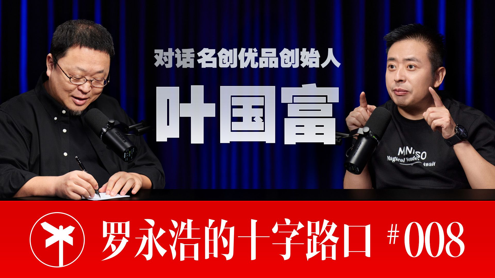

封面来自 B 站 @罗永浩的十字路口 PEOPLE · 罗永浩的十字路口
叶国富一个总在"别人看不懂"时下注的零售老兵
大家都能看懂的就没什么可做的了，看不懂就对了。
罗永浩 × 叶国富 · 全长 2 小时 55 分
① 他是谁 叶国富，1977 年生，湖北丹江口一个农民家庭出来的人，名创优品（MINISO）创始人、董事长。外界给他贴的标签是"十元店之王""中国版无印良品"——但他在这场对谈里反复想撕掉的，恰恰是这个标签。
如果只看这场访谈，你会看到一个极其纯粹的"线下零售动物" ：他说人生最开心的事就是逛街，最高峰一天在悉尼逛了十六个商场；他到任何一个国家，第一件事就是逛商场；他刷小红书刷得比谁都凶，因为那是他"发现门店哪个货架不对、哪个灯不够亮"的眼睛。他的两次创业——早年的饰品连锁"哎呀呀"、后来的名创优品——都是"逛街逛出来的"。
但这场对谈真正的主角，是一个正在给自己重新下定义 的叶国富：他不再满足于做那个"把一两百块的眼线笔打到十块钱"的性价比之王，而是在 2025 年正月初八上班路上的车里"顿悟"，决定把名创优品从一家零售公司 整个掀翻、变成一家文化创意公司 ——All in 原创 IP、十年要带一百个中国 IP 走向世界；同时还在 2024 年用六十多亿"蛇吞象"收购了连续亏损的永辉超市，要做"一个不收会员费、小包装的中国版山姆"。
一句话定位他：一个把"逛街的快乐"做成全球八千多家店、却又总在"别人看不懂"的时刻押上重注的零售老兵 ——他赌过杂货、赌过 IP、现在赌文化出海和超市。每一次别人都说看不懂，每一次他都说"看得懂就没意义了"。
② 生平（极简主线） - 草根起点 ：1977 年生于湖北丹江口农村，中专肄业（家贫交不起学费、没拿到毕业证）。约 21 岁南下广东打工，做五金销售。（出生年/籍贯/学历见《校订记录》及背景研究，引用前请核。）
- 第一桶金 ：2000 年代初和当时的女朋友（后来的妻子）逛街，看到饰品生意好，开了第一家饰品店；2005 年做成饰品连锁品牌"哎呀呀"，巅峰期门店数以千计。
- 封神之作 ：2013 年创办名创优品——灵感来自他到日本逛街，发现"两百日元店"里的小杂货设计精美、价格便宜、还多是中国制造。他把这个模式搬回国内，从 0 干到 100 亿只用了约五年 （他自称比马云从 0 到 100 亿还快），最高峰一年开一千多家店。
- 方法论成型 ：广交会一扫找外贸优质供应商、现金买断制换信任和好价、"投资合伙人"模式（加盟商只出钱找铺、总部全包运营）、极简门店管理（店员只管上货和卫生）、每周一选品会、每年淘汰 50% 的 SKU。
- 第二曲线（IP） ：2016 年起做 IP 联名（Hello Kitty、漫威、迪士尼……至今合作全球约 150 个 IP）；2020 年拆出潮玩品牌 TOP TOY，如今已递表港股拟独立上市；2025 年起 All in 原创 IP ，半年签约 17 个艺术家 IP。
- 跨界豪赌（超市） ：2024 年斥资约 62.7 亿元收购永辉超市约 29.4% 股权、成第一大股东，请于东来"免费"帮忙做"胖改店"，目标做"中国版山姆"。
- 此刻的他 ：每天第一件事是做原创 IP，每天的工作是巡店；说自己"找到了新战略方向，有幸福感、有多巴胺"，从没想过退休。
③ 为何受访 · 为什么是这场对谈 这期的明面是"罗永浩聊一个他几乎完全不懂的行业"。罗永浩自己反复说："这块是我懂得比较少的，今天就是学习的态度。"——他做了一辈子电商和手机，从没开过一家线下门店，所以全程像个好奇宝宝，问到兴起甚至当场说"我也准备开店了，老罗的名创优品店"。
但要理解这场对谈，得看清叶国富此刻最想对外讲的是什么 ：他正处在一次主动的身份切换 中——从"十元店老板"切换成"文化创意公司掌舵人"。所以他需要一个高质量的麦克风，把三件事讲清楚：①名创为什么要从零售公司变成文化创意公司；②收购永辉这步"看不懂"的棋，背后的逻辑是什么；③他这套"用巧劲"的判断力到底是怎么回事。
于是这场对谈本质上是：一个刚刚给自己找到新叙事的零售老兵，借一个"完全外行但极擅长提问"的同行，把自己想清楚的事，讲给市场、讲给同行、也讲给自己听一遍 。要留意一个底色：这是他单方面的、相当顺滑的自述 ，全程几乎没有挫折和反例（罗永浩都忍不住说"听着这么顺，听着很生气"）。读这份精读时，请把它当成"一个聪明人如何叙述自己的成功"，而不是"一份客观的复盘"——后面会专门点出这里的张力。
④ 他代表哪类人（可迁移） 叶国富是一类人的极致样本：靠"趋势判断力"而非"蛮力"吃饭的产业老兵 ——罗永浩给了他一个精准的词，"用巧劲"。从他身上能抽出几条对普通人也成立的迁移点——
1. "看不懂才有机会"——主动到共识之外去下注。
这是贯穿全场的暗线。他 2014 年说"中国 99% 的人看不懂名创的模式"；2024 年收购永辉，"大家也都看不懂"。他的原话是："大家都能看懂的就没什么可做的了，看不懂就对了，看得懂了就没有意义了。"——对任何想做点不一样的事的人，这是最反直觉也最实用的姿态：当一件事所有人都说"好"的时候，它的超额回报已经被分光了；真正的机会，往往长在"别人觉得你疯了"的地方。 但请注意它的前提（见第 2 条），不是鼓励你乱赌。
2. "巧劲"的背后，是十年的"种子"和一套验证系统。
罗永浩全程"羡慕嫉妒"他没有焦头烂额、没有下笨功夫硬扛。叶国富的回答轻描淡写："趋势找得好""我用巧劲""有些是运气、老天的安排。"——但如果你只学到"用巧劲"，就学反了。深挖会发现，他的"巧"建立在三块笨功夫上：①十年的判断储备 （"中国要有个好超市"这颗种子，他 2015 年参观 Costco 时就种下，藏了十年，等到胖东来把样板打出来才"发芽"）；②极致的供应链底盘 （爆品、买断制、自有品牌占比，是别人抄不走的硬功夫）；③庞大门店当验证场 （八千多家店、单店日均上千人，让他能"批量试错、快速淘汰"）。所谓"巧劲"，是长期准备 + 强大底盘，在正确时刻的一次轻轻出手。表面的偶然，是积累出来的必然。
3. "卖产品" vs "卖货架"——分清你到底在靠什么赚钱。
他对中国超市病根的诊断锋利得像把刀：传统超市是"卖货架 "的——靠上架费、进场费、条码费、促销费赚钱，谁给钱多就卖谁的货，结果货架上全是给得起渠道费的二三线品牌，消费者越走越远；而胖东来、山姆、Costco 是"卖产品 "的——不收这些费用，只把每个产品做好，消费者要什么卖什么。"卖产品的公司都好了，卖货架的公司全军覆没。"——这个二分法可以迁移到几乎任何生意和个人身上：你是在靠创造真实价值赚钱，还是在靠收某种"过路费"（位置、信息差、平台抽成）赚钱？ 后者短期舒服，但一旦环境变了，就是温水煮青蛙。
4. 面对高度不确定，用"批量 + 试错"把偶然工程化。
他对"如何做出爆款 IP"想得极其清醒：超级 IP 的诞生全是偶然 （Labubu 火之前默默无闻近十年；三丽鸥 52 年只出了一个 Hello Kitty）。但他没有因此躺平等运气，而是给出一套工程化打法——"赛马"：签一大堆 IP、批量开发产品、铺到门店自然销售、跑出数据的就"重金推广"，跑不出的立刻淘汰。他甚至给团队下指标："今年给我浪费一个亿的签约学费"——故意把"试错成本"预算化。单点的成功不可预测，但你可以通过提高"出手次数"和"淘汰速度"，让系统层面撞中爆款的概率变高。 这对个人选赛道、做内容、做产品同样成立。
⑤ 普通与不普通 普通的地方，普通得让人意外：
- 他把自己的起家说得相当"朴素"：名创为什么起步那么快？"市场需求好，赶上了、摸准了脉搏。"——没有什么神秘配方，甚至坦白"我对趋势是不太懂的，就是直觉觉得"。
- 他承认自己"没能力做线上" ："做企业也是我的能力，我没有能力做线上。"一个零售巨头，大方承认自己有明显的能力边界，只在自己最拿手的线下里深耕。
- 他的"市场调研工具"朴素到不行：逛街 + 刷小红书 。发现新 IP 是刷小红书刷出来的，发现门店问题也是刷小红书刷出来的。
- 他爱玩具爱得很真诚——和罗永浩一拍即合，当场约定要做一条"老罗产品线"、给中老年人做潮玩，两个中年人聊得像孩子。
不普通的地方，是同一种特质的两面：
- 极强的"顿悟"能力 + 极长的"潜伏"耐心。 他能在正月初八上班路上的车里，因为《哪吒》突然"顿悟"出"企业要站在国家战略上、文化是下一个国家战略"这套叙事；也能把"中国要有好超市"这颗种子在心里埋整整十年 ，按兵不动，直到环境成熟才一击收购永辉。一个人同时具备"瞬间的直觉"和"十年的隐忍"，是稀缺的。
- 永远在"看潜力"而非"挑毛病"。 他做自有 IP 之前，先冷静"观察"——等泡泡玛特用自有 IP 跑出稳定模型、确认这条路在中国走得通，才下场。他不抢第一个吃螃蟹，但一旦确认方向，就 All in、"没有预算上限"地富养团队。
- 把"被逼"当成动力的清醒。 他有一句话很冷："人都是被逼出来的。如果你我一出生就有一百亿，干什么辛苦？"他诊断中国超市为什么烂——"过去太好赚钱了，收个进场费就行，日子好过，温水煮青蛙，就没能力了。"他对"安逸会腐蚀能力"这件事，有近乎本能的警惕。
一句话概括他的不普通 ：他不是最勤奋的，也不是最懂技术的，但他可能是最擅长"在正确的时刻，把十年的判断轻轻押下去" 的那一个——而且每次都选在别人看不懂的方向。
⑥ 反认知洞察（这场对谈里最值得带走的几颗钉子） 1. 中国电商发达的真正原因，不是"线下落后"，是"物流便宜到一块钱"。
有个流行理论说：中国线下零售本就比发达国家差，所以电商进来才摧枯拉朽。叶国富直接否掉："这个观点不成立。"他给的真因是：①中国有千千万万工厂、供给极其丰富；②物流成本低到一个包裹一块钱 ，而这背后是"电动车送货"——"如果不允许电动车上路、改用小汽车送货，外卖和电商会掉 70% 以上";③人口密集。真正的结论是：很多被归因于"先进/落后"的现象，底层其实是某个不起眼的成本结构（这里是电动车 + 人力）。看问题别停在叙事层，要往下挖到成本结构那一层。
2. 情绪价值没有天花板，功能价值有。
他把名创的转型讲透了一层：过去卖的是功能价值 （实用小杂货），现在卖的是情绪价值 （潮玩、IP）。"潮玩是没有功能价值的，主要解决情绪价值，所以情绪价值没有天花板，有无限想象空间。"——配合那个硬核数据：全球 IP 人均消费，美国约 3077 元、日本约 580 元、中国只有 51 元 ，差日本约十倍（叶国富访谈里口述的"美国 2077 元"系记忆/口误，按峰瑞资本口径应为 3077 元，详见《校订记录》）。启示：功能性产品的价格被成本和竞争死死摁住（眼线笔从两百打到十块）；而情绪性产品的定价空间，取决于你能在用户心里建立多深的意义。越往上走，越要做"意义"，而不是"功能"。
3. "超级爆款是偶然，但批量运作是必然"——别赌单点，要建系统。
这是全场最精彩的思辨。罗永浩举三丽鸥"几百个 IP 只红了 Hello Kitty"，叶国富顺着推到底："如果超级爆款是必然，三丽鸥 52 年该出 5 个，但只有 1 个，所以是偶然。"——可关键在后半句：三丽鸥"一大堆中等爆款也都很赚钱，出一个超级爆款带动一堆，其实也就够了"。所以正确的策略不是"押注哪个会成超级爆款"（不可能押中），而是"批量做出一堆'还不错'的，让其中某个有机会撞成超级爆款"。 对个人也一样：你猜不到哪篇内容会爆、哪个机会会成，但你可以通过持续、批量地产出"及格线以上"的东西，把"被命运选中"的概率做厚。
4. "看起来最顺"的人，往往藏着你没看到的代价和风险。
这是需要读者自己加上的一层"反认知"。叶国富全程把收购永辉讲得无比美好——"胖东来调改第一家店业绩涨 13 倍""于东来免费帮忙、不收一分钱""我用巧劲、表面偶然其实必然"。但要清醒：这是他本人的乐观叙述。 现实里，永辉这桩"蛇吞象"至今仍是一场胜负未定的硬仗——公开资料显示，永辉 2025 年净亏损约 25.5 亿元（连续第五年亏损）、全年关店 381 家、年末门店只剩约 400 家。访谈里"涨 13 倍"是真的（指郑州信万广场调改首店、首日销售额约为改前日均的 13.9 倍），但那是单店、调改首日的高光时刻 ，不等于整盘生意已经成功。启示不是"他在吹牛"，而是：任何人讲自己的成功，都会自然地把'偶然'说成'必然'、把'还在打的仗'说成'已经赢的局'。 听任何成功故事，都要默默问一句——"代价呢？还没翻篇的部分呢？"
5. 真正的护城河，是"别人买不到的差异化产品"，不是"位置"或"会员费"。
他拆解山姆为什么敢收会员费："因为你在我这能买到别处买不到的产品。如果都能买到，凭什么交会员费？"所以他给永辉定的方向是：不收会员费，但做极致的产品差异化和自有品牌 （对标 Costco 的 Kirkland——单一个自有品牌一年就能卖到约 560 亿美元、占 Costco 营收的近三分之一；叶国富访谈里说的"800 亿"是品牌价值口径、非年销额，详见《校订记录》）。迁移到任何生意：你的壁垒如果是'我占了个好位置/我有个收费的闸口'，那是脆弱的；真正硬的壁垒，是'这个东西只有在我这儿才有'。 把"渠道"做成"产品"，把"卖场"做成"品牌"。
6. "站在国家战略上"——一个企业家如何给自己找"必然性"。
他反复强调："任何企业做大做强，一定要站在国家战略上；不在国家战略上的，再大的企业都会没落。"科技出海是上一个十年的战略，文化出海是下一个。这套话术真假先不论，它揭示了一种顶级操盘手的思维习惯：不只看自己的生意好不好，而是把自己的生意嵌进一个更大的、有势能的趋势里，借势而行。 对个人的迁移是：与其单纯比拼"我比别人努力多少"，不如先想清楚"我站在哪条正在涨潮的大河里"——选择踩在上升的浪上，比在平地上狂奔重要得多。
尾声 · 一句话留给读者 叶国富这场对谈最迷人的地方，不在于他教了多少零售技巧（那些会随时代过时），而在于他展示了一种"巧劲型"老兵的活法 ：他爱逛街爱到一天逛十六个商场，把一件"快乐的小事"做成了全球八千多家店；他承认自己没能力做线上、靠刷小红书做调研，却能在别人看不懂的方向上一次次押对重注。
他的"巧"，从来不是投机取巧，而是——十年磨一个判断，然后在正确的时刻，把它轻轻押下去。
如果你也想做点不一样的事，他给的答案其实藏在那句"看不懂就对了"里：
别去抢所有人都看懂的机会，去种一颗别人嫌你傻的种子——然后耐心等它发芽。
但也别忘了，听他讲完这一切顺风顺水时，得自己补上那句罗永浩没问出口的话：代价呢？还没翻篇的那部分呢？
完整对话 · 全长 2 小时 55 分
喜欢逛街的零售人：线下基因与对电商的认知 叶国富：
38的毛利，一年到一年半就回本，我们为什么不开几个店？
罗永浩：
越听越想开一个店，我也准备开店了，老罗的名创优品店。我老想开店，把访谈给忘了，我得收一收。对，先做完访谈。
罗永浩：
欢迎大家收看罗永浩的十字路口。最重要的是一键三连和加关注，还欢迎随时发送弹幕评论跟我互动。好，那我们开始吧。就是正式聊这些企业的问题之前，我想问一个：就是听说叶总一直很喜欢逛街，然后就是逛商场什么这些，然后是从小就对这个店铺啊、这个门店啊这些特别有那个特殊的感情吗？
叶国富：
我确实比较喜欢逛街。我第一个创业、第一个店就是逛街逛出来的。当时跟那时候现在老婆、当时跟女朋友逛街的时候发现，当时开饰品店，发现这个街上饰品不错，我就想要不要开个饰品店。
罗永浩：
然后我从多方面的报道和你以前的那个公开发言来看，你对线下零售业有很强的这个执念。这里边感性成分有多大、理性成分有多大？你怎么回答？
叶国富：
因为我本身就是开店起来的，包括第二个名创优品也是我到日本逛街逛出来的。生活小杂货、杂货店、百货店，这个设计得很漂亮、很精美，价格也很有竞争力、很便宜。所以我当时在中国没这个模式，因为我本身是靠线下起来的，对线下天生有一种敏感，我说把这个模式引到中国，诞生了名创优品。所以我的基因、或者我的出生、或者我最拿手的吧，就是开店，所以我对线上、我对线下更有感情。
叶国富：
但是反正做企业也是我的能力，我没有能力做线上。
叶国富：
现在销售占个10%左右，但90%还是线下产生的。现在很多零售品，大部分零售品依然以线下为主。
罗永浩：
我买过名创优品很多东西都是线上买的，线下很少去逛，主要是现在没什么时间逛街了。其实我也愿意逛街，我虽然是个男的，我也爱逛街，但是就是没有那么多时间，可能是主要原因。然后我记得当年电商貌似无所不能、然后在中国气势如虹的时候，你不止一次对那个电商行业、对马云老师什么的都喊话，说这个电商要完全取代实体零售这个是一个叫什么——痴人说梦，是这么说的吗？然后那这十几二十年过去了，对电商和零售业这个关系的认知跟当年有什么明显的变化吗？
叶国富：
电商这几年确实发展得很快，是，还层出不穷新的模式，对中国的零售业冲击很大。但是我们看如何找到时刻、找到你的模式来发展，我认为这也很重要。有些人在线上也做得很好，有人在线下也做得很好。比如说我的能力在线下，我就围绕线下把我产品做好；那么有些人他的能力适合做线上，他把一款产品做好，在线上卖都可以。我认为还是从企业家各种情况出发比较好，擅长哪个、喜欢哪个，你擅长哪种打法就哪种打法。名创优品这几年也通过线下也做得很成功，但是我们也不否定线上，我们线上现在也在大力发展，也要做。那么很多线下品牌也在做线上，小米从线上起来的，现在线下也开得很成功，也在开店。我认为还是要放掉线上、线下的概念，放弃哪个代表未来的概念。
叶国富：
要回归产品本质、商业本质。我认为还是要把产品做好。一个企业如果没有好产品，什么都不是；只要你有好产品，你在线上、线下都卖得好。你看我们现在看到好产品，你在线上卖得好，现在也卖得好。对啊，你看山姆产品做得很好，在线上卖得很好，山姆一开前置仓线上也卖得很好。所以我认为核心的不是线上、线下，核心的是大家一定要聚焦一个观点，就是你把产品做好。
罗永浩：
那当年对电商有那么大的反应，是因为电商当时宣传得好像自己无所不能，所以你才有那个反应吗？你怎么看这个问题？
叶国富：
我当年，我说实话，我对这些趋势是不太懂的。但是我当年看的时候，我就直觉觉得有一些是不可能不看不摸的情况下消费者买单的。所以我就会觉得，有一些标品就是像电子产品、数码产品这种标品，而且垄断完了以后就几家大的品牌掌控市场的，我认为这些电商化是毫无疑问的。但是线下有很多我们要看过、摸过，还有有的时候逛街是一个没有预谋的，那种碰到以后觉得心气对了、心情愉快了就买了、冲动消费的，我觉得这些是永远不可能被电商都替代掉的。所以我当时觉得整个电商行业宣传是有一点绝对了。
叶国富：
我认为一个企业做不做线上从你企业家能力来出发，一个品类、哪个商业模式、哪个产品做不做线上，也要看每个产品、每个品类不一样。你讲数码，它是个高度标准化、透明化的产品，你可以在线上直接做了，高度透明，品牌、型号，你输入什么型号，它是高度透明。我认为还是要客观的根据品类、根据各种企业的企业家能力来分析，我认为是比较客观的。
罗永浩：
所以当时有比较强烈的反应，是因为电商行业吹得太邪乎了，是吧？
罗永浩：
明白，明白。而且说实话，就连数码产品在内的标品也不一定。我自己做手机那几年，每次到那个外地出差坐出租车都会看司机用什么手机。我当时就发现出租车司机用苹果的非常少，然后用小米的也非常少，大部分是OPPO、vivo，然后还有一些华为。然后我就问他们会不会在电商购物，然后那个司机还挺生气的，就是那种"你怎么瞧不起人，我当然会电商购物"。然后我说——因为他先告诉我他手机是线下买的——我说那你为什么不在线上买手机呢？因为手机都是标品，而且还有七天无理由，线下还没有七天无理由呢。然后他说的其实还挺超出我的认知的，他说他多年以来手机都在他们家门口那个胡同的那个夫妻老婆店买。他说他在那买的原因是：第一，他不懂得问，那个都是街坊邻居，那个人就服务那几个片的，所以那个夫妻老婆店的店主给他讲得非常详细；他说甚至下班后有时候手机出什么问题、不会用，那个人还到他们家去给他服务。我说这种东西，类似这种可能是电商永远无法取代的。
叶国富：
还有一个就是你刚刚讲了的，让我想起OPPO到今天还是以线下销售为主。
叶国富：
我认为家电的批发市场、各种批发市场肯定会抵抬，但是你一个专卖店、单体的单品牌专卖店，我认为线下不管你做数码——包括我们讲OPPO、vivo现在线下依然占主要流量，几万家店——包括小米，当年雷军出来创建的时候全部是做一个简单叫"互联网手机"，是在线上卖的，后来他发现线下流量更强大，现在小米店也有上万家店，而且线上线下现在基本上可以五五平分。我认为还是不要做什么事情都太极端、不要走偏。
罗永浩：
而且我想象一个世界，如果全是线上购物，下边那些逛街的那些也都没了，好像这个世界也挺无趣的。
名创优品从0到100亿：起步、选品与跑通模式 罗永浩：
是吧。然后大家会把名创优品的创业分成杂货铺时期和IP产品时期，这个分类你是认同的吗？两个历史阶段？
罗永浩：
我记得名创优品发展的速度非常快，起步很快。
叶国富：
这种还是市场需求很大，我们抓住了一个非常大的需求。我们从零干到一百亿，我们大概用了——多少？用了是五年？
叶国富：
0到100亿，当时我们这个成长速度应该比马云从0到100亿速度还快，那是他们电商初期还是很艰难的。我认为当时整个中国人口多、14亿人口，没这个东西，但我们一夜之间出来。然后最高峰一年开1000多家店，成长很快。
叶国富：
市场需求。一个是赶上这个市场需求，然后摸准了这个脉搏。
罗永浩：
那开始做的是饰品为主的，然后开始做这种更丰富的小杂货的时候，那个第一批的供应商是怎么解决的呢？
叶国富：
广交会一扫。广交会全是出口的优质的供应商。我们最早做名创优品，因为广交会在广州，我就带领我们的商品中心去广交会去找这些。这些都是能到广交会、进广交会去开展的供应商，都是有一定实力的，有产品设计能力的，有外贸经验的，就是有海外审美观点的、审美在线的，这些供应商。我们跟他们合作，实际上大大提高了我们产品的竞争力。
罗永浩：
那你们起步找这些，就是准备开店的时候卖哪些、不卖哪些，
叶国富：
我们对标这些友商来参考这个模型，所以可以定一个基本盘，参考前面那些企业做过的定一个基本盘，然后不断地再淘汰和加新产品。而且我们上新也很快，我们每个星期就上新，不行马上下来再上新，通过半年、快点的话三个月——当时最早其实我名创优品的产品三个月就不一样了，你每过三个月产品进步很快。
罗永浩：
那自己的自营店跑通这个模式用了多久开始加盟的？
叶国富：
加盟之前自己的自营店三个月吧，三个月就跑通了。因为你开店没什么神秘的地方，
叶国富：
店一开张生意好不好，一个小时可以发现，不要说一天这么夸张。你顾客进来买不买？你进来了100个人，有多少转化率？如果进来100个人只有5个人买，你这个不行的。到名创优品到今天，我们的进店转化率是30%，进来100个人有30个人买单。你说电商有这么高转化率吗？
罗永浩：
你们选址全都是在热闹的那种商场、商场里面最好的位置？
叶国富：
最好的商场、最好的位置，一天每个店进来1000人、2000人。好和不好不要三个月。为什么有些店开7天都活不下去了？没有人啊，没有人赶快关啊，你做不下去，熬夜没用啊。一开业，那个时代、那个时期，我开个一百多平，一天一开业一天卖五万多，你说好不好？这个需求在中国这么旺盛，又没有人先做过这个事。
罗永浩：
那从起步跑自己跑出来的这个示范店、然后到加盟，总共是六个月？刚才说三个月、六个月开始启动？那这种招商是
叶国富：
前面我们开发产品、到设计电芯（门店），这个估计我们大概用了——我看我们六个月时间、半年时间准备，还是有半年准备半年，然后三个月跑通了。跑通了之后，很多人那个时候要找我们加盟这个店，每天上门、打电话找我们。
罗永浩：
他们怎么知道的呢？你只开了一两个、两三个这种实验店，他怎么就很快知道了呢？
叶国富：
每天店门口都过几万人嘛，你生意好不好都可以看，都想开个这样的店嘛。所以那些做零售业的他们自己就会到处去观察，所以你也不用打广告。店铺是最好的广告，生意是最好的广告。包括到现在，我们中国第一个加盟商就是一个云南的人，到广州去逛街发现这个模式很好，然后那个时候我还没有想加盟，他主动找到办公室，说我想开个店、开到云南去，找到你们办公室。开到丽江一开，也比广州生意还好，火都不得了。然后我们海外客户，菲律宾的人到广州旅游，一看这个店生意这么好，说我能不能把这个带到菲律宾，菲律宾就起来了。海外还不是主动出击的，最初是主动人找上来。所有的我们海外最早的都是主动到广州旅游，我们第一个店在广州，到广州旅游看到名创优品很好、这个模式很好，说我能不能带到我们的国家去。
罗永浩：
你们平均利润率大概是怎么样？就对那些加盟的店主来讲？
罗永浩：
我问这么细，事我也想加盟一个。因为我准备这个访谈的过程中越看越好玩，因为我对零售——我们做电商流程，但是完全另一套逻辑，就是做这种门店这种一直都没做过，一辈子没开过一个线下的门店，所以我对这个就特别好奇。
叶国富：
对，你看我们现在也一直是开放加盟的。开放加盟，像我们上海南京路开一个
叶国富：
全球一号店，九个月干了一个亿，八月份最高峰一个月干了1600万。所以对加盟商来讲是不用打广告，主动就会找上来。真正的好的东西不需要广告，差的东西要广告。你见过任何东西，好的东西要广告？
叶国富：
那是做品牌，不是做加盟广告的。我创业到现在，我从来没在加盟广告上花过一分钱。
营销、咨询公司与对供应商的现金买断制 罗永浩：
好像你们也没找过那些做市场策划、品牌营销的那种公司服务，也没用过是吗？
叶国富：
这个用过，像什么——里斯和特劳特在中国都有代理机构，特劳特曾经我也用过。
罗永浩：
你笑是因为我前一阵跟他们那个事吗？为什么笑？明白。那还用过哪家现在在用的？君智？我好像说对君智很感兴趣。
罗永浩：
因为我自己在锤子科技时期，我自己是负责市场营销和品牌建设的，所以我对这个行业就看得比较多，跟他们起冲突之前也是看得比较多。当时其实也是意外吧，我也没想跟他们怎么样。好，那个名创优品时期经常被媒体津津乐道的一个事是，就是你们——我想插一下，就咨询公司这块，咨询公司用好咨询公司也都不错的。
叶国富：
当然当然，你看华为用了全世界很好的咨询公司，我们要科学看待咨询公司就行了。没有，我对他们没有偏见，华与华是因为意外起了一个冲突，我对他们这个行业没有偏见。而且有人发现这些行业有一些赚钱挺多，就说他们出个PPT就这么多钱，这不骗子吗？这个我完全不认同。我也是像早期看过很多定位理论，我也是他们的忠实信徒，定位理论这套理论还是很好的，特别是对快消品、零售业的指导作用
罗永浩：
是非常明显的。而且他们自身也在进化，就是随着媒体和广告形式发生变化以后，很多时候公关工作的重要性比广告工作的重要性明显提升。那个时期我看里斯他们也写了一本书叫《广告的没落，公关的崛起》，那个对我影响和帮助也很大。我对他们没有偏见，而且我说实话我在这个领域算是半个专家，所以我对他们没有偏见，那个是意外导致的擦枪走火，不是因为我要针对他们行业。
罗永浩：
进化谈不上，我也没打他们这个行业，让他们更真诚一点，真诚的做事、真诚的对待客户、真诚的对市场行为要有敬畏之心。但他们这个领域的人——我不特指华与华——他们这个领域的人经常搞一些装神弄鬼的，那也是他的营销手法，有一些不懂这个的企业家，真正的好咨询公司绝对不会装神弄鬼的。
叶国富：
也不好说，其实还是或多或少都有一点的营销手法。因为他们自己就做营销的，他懂的那些技巧必然在自己的传播的时候也会或多或少用，只不过有的搞得吃相不好看，有的弄得挺体面，就这个差异吧。
罗永浩：
然后媒体经常报道名创优品起步很早期就敢对这个供应商搞买断制，然后给快速结账什么的，这个是发展迅猛的一部分原因，这个你是认同的对吗？
叶国富：
我认同。当时我们为了取得供应商信任、为了缩短账期、拿到更好的价格，所以我们就现金结算。但是很快就成了明星连锁店，他们应该——我们早期是这样的。早期我给你讲一个故事，因为我不知道你对外贸企业了解多少。
叶国富：
中国企业分内贸和外贸。外贸企业呢，接单呢，
叶国富：
一接单，海外的客户先打一部分定金，然后再开信用证，信用证开过来基本上都相当于百分百收款，然后再生产、再交付，没有收账那个概念，没有要账的概念。然后中国的供应商呢，很多供应商货卖出去钱收不回来，要账要很像要命一样，所以外贸供应商对收账非常敏感。当时我们找一个外贸供应商，因为到广交会——我这里面有个细节告诉你，到广交会的都是外贸供应商。什么叫外贸供应商？直接外单、不接内单的。我应该是第一个到外贸供应商让他做内单的人，很多人接受不了，做内贸不做，对呀，账期很麻烦。我说我给你现金、你不用担心。我还经常请这些外贸供应商一起吃饭，我说你要相信我这个模式，我给你现金结算，你给我好的价格、给我好的品质。因为外贸的品质都很好的——所有的好东西，中国历来好东西都出口、差东西都自己用。那个时候我们就是打动了一批外贸工商，而且我带队亲自去谈。我到一个会场，我说我要一个宁波的一个工厂，是做杯子的，杯子做得很漂亮，五颜六色，设计得很颜值在线，我要给他做。他说内贸你出去，我们不接内单，我们做外贸的。
叶国富：
对啊，毫不客气。因为每个人有自己认知嘛。他说他一个弟弟是做内贸的，曾经跟一个商家合作，第一单很讲诚信，
叶国富：
第二单下一个大单，第三天电话都不接了。他说我对内贸有恐惧，内贸和外贸完全两套逻辑。我们当时为什么那么火爆？就是我用最好的品质卖了一个很便宜的价格，所以迅速成事了。消费者——我们前天接见一个我们西藏的一个加盟商，西藏的一个加盟商跑到我们的、在西藏加盟一个店，那个店面积多少呢？是94平，一年干了1400万。他说我这个店一年可以赚大几百万，那每天早上这坪效很恐怖，94平。他说到现在就像做梦一样，那个时候每天门口每天排队就进去买东西，对于西藏没见过这么好的东西，价格还这么便宜。
罗永浩：
那你们整个名创优品的发展过程里，基本上那个加盟是被推着走的吗？没有主动去做那些推广吗？
叶国富：
到今天。你店越多——每个线下店有个好事就是什么？线下店不仅是这个店，还是流量入口啊、还是广告入口啊。你想想在每个步行街，很多步行街一条街一天的流量是十几万的流量，你这边立个招牌，不要说门店，你立个广告牌，这个广告牌一年收取500万的广告费。但我开个店，你想想我一个店门头的广告一年如果不要说500万、300万，我一千家店多少钱。那个店的本身就是广告，你生意越好越是广告。
罗永浩：
我听各行各业的说，开店的时候选址这件事，如果真要选那种热门商场里的那种黄金铺位的话
选址与加盟模式 · 等铺、改店与商场主动调位 罗永浩：
基本上选一个址经常要等个一年两年，这种事你们的那些加盟商是怎么解决的？他们本来就是有店的还是怎样？
叶国富：
有两种。本身有些有店的，直接改改项目嘛，以前卖服装商场的，直接改成名创优品。还有一个就是——只要你这个商业模式好、业绩好，有些商场主动给你调整位置。前面人没到期的，人家想续约，但商场不续约了，赶走，然后改成你们的店。
罗永浩：
对啊，可能到期了，还有有些需要等一等的。明白，有意思。这个对我现在道行很浅啊，全是新的认知。因为我们请的企业家，有一些他做的那些事，我懂的比例都不一样，有的懂得比较多，有的懂一半，这块是我懂得比较少的，所以今天就是学习的态度。
罗永浩：
好。现在发展到今天，直营店——就是名创优品的直营店和加盟店比例大概是多少？直营店很少是吧？
叶国富：
只有我们现在直营店十来家吧，就是类似于旗舰店、样板店，打一个示范，但是我们的商业模式主要靠加盟商来做。
罗永浩：
明白。这个是没想到的，就是那么多的加盟店基本没做过宣传？对那些小毕业主什么的，那些没有做过宣传，这个非常厉害。所以只要生意好的话，这个是自然来的。
叶国富：
因为你开门店是开门做生意的，你生意好生意不好，你老板知道，顾客也知道，全社会都知道，你隐藏不了。不像电商公司，生意好你自己知道，别人不知道，数据还能造假，数据还刷单。
罗永浩：
你现在什么刷单你刷不了单，你到那去找那么多陌生的，刷单也没有意义。你们有能对外公布的平均值吗？
加盟经济模型 · 单店投入、回本周期与开店冲动 罗永浩：
就是名创优品的加盟店，平均要投入多大——就是想加盟的这些商户要投入多大，平均一年大概能赚多少钱，这些有一个可以对外公布的平均值吗？
叶国富：
都有，我们都有。我们现在开一个店大概在150万左右，一个标准店，人民币150万左右，平均是100到200平米吧我记得。但是早期是小店，现在都大店了，现在我们起步都要小店都200起步了，200起步；中型店铺400起步，大店600起步，越来越大了。我们现在起动资金都高了，小店150到200万，大店有可能要投1000万，也有到1000万的。
罗永浩：
不是，看我的，直播还得更赚钱。不是，我主要是首先我对线下店也有感情，我很喜欢逛店，只是现在没经历过。然后还有一个是我对我没做过的事其实有一些是有兴趣的，不是每个都有兴趣，但是对开店这个事一直都是有兴趣。
叶国富：
可以开个联名店，"老罗的名创优品店""交个朋友和名创优品"的一个联名店，做一些特别的东西。给老罗设计一个这个IP，打造一下，我买你的IP。这个我们真的在做，你回头把我们做的——现在我们跟国内一个著名设计师叫那个大橘子合作了一个那种特别萌的，我的十个历史时期的不同造型的公仔，我给你搞线下首发。
IP与门店体验 · 签售、IP打造与南京路旗舰店 叶国富：
也去签售一下。这几天我们很多明星到我们上海南京路去现场签售，一场签售也卖几十万上百万。
罗永浩：
这个我们在网上先预热一下的话，到那会真的排队。
叶国富：
肯定排队。好好设计老罗的IP形象、罗老师的IP形象，我们好好设计、认真打造。我认为把你打造这种潮玩艺术家IP形象，还是很有信心的。而且现在有AI，我们可以做一大堆去测数据。
罗永浩：
这个多有意思。也不能都是那种苦哈哈的干活，也做点好玩的又能挣钱的。平均一年到一年半，这个挺过瘾的。我老想开店，把访谈给忘了。起步的时候把规模定到一两百，然后现在平均越来越大，是因为生意越来越好，那个门店已经支撑不了了是吧？现在要更好的体验。上海有没有上千平米的那种旗舰店？
叶国富：
对，一千五百方，可以草薇〔疑为"操盘/操作"，建议核〕。我们回头去看看，每天排队，从去年开业到现在每天排队。
叶国富：
早上开门前他排队，不久就排队8到10分钟，一会儿一会儿就行了。所以你要不排队的话里边挤的不行，所以会限制进店数量，稍微限制一下。
罗永浩：
也选一些顾客，有些不是我们想买的你就不要进去了。明白，所以门口有一个导购对话什么的来引导。
叶国富：
上海南京路被称为南京路的店王，整个一条南京路业绩最好的铺、人气最旺的就是我们那个MINISO LAND店。
爆品思维 · 眼线笔、香薰与CHIIKAWA爆款IP 叶国富：
那个MINISO LAND是后边做的。那个叫什么，就加了那个 Land，是那个大型体验店，叫城市乐园店。那个是一千多平米，一千五到一千七。
罗永浩：
然后从早期到现在一直在强调那个爆品的、单品的这种思维。那我想知道，名创优品早期卖得最好的单品爆品是哪个，然后整个历史阶段里卖得最狠的一个爆品是哪个？
叶国富：
我们过去卖最好的一个单品，就是我们开发最成功的——女性的眼线笔，一年可以卖一亿支。
叶国富：
那个我们以前都是大牌做的，都要一百多两百多，我卖十块钱一支。我在密着〔指名创优品在香港/美国上市〕在香港、在美国上市的时候，我们很多券商投行的那些女的，从包里面拿一个这个眼线笔，她说这就是我在名创优品买的，还用了十几年、还用了好多年。你想，我就不点名，那是一个非常大的外资行的中国区女老总，从包里面拿出一支，她说我用了很多年很好用，只要十块钱一支。她说我以前没有买，以前我都是买一百多两百多的。
叶国富：
品牌溢价。本质品质一样，都是一个工厂出来的，同一个供应商。
罗永浩：
明白了。所以这些本身化妆、美妆这些都是高毛利高附加值的产品，但是你就把它打下来，回归于平民。
罗永浩：
我买过你们的香薰，也是价廉物美。我以前买那些国外品牌的香薰也没啥，放一瓶也是半年就挥发干了，然后动不动几百块——我也不点名了——上千块的也都有，其实也没什么本质差异。你们那个香型弄得也挺高级的。
联名与品牌建设 · 五星酒店香、IP授权与明星代言逻辑 叶国富：
我们跟很多威斯汀〔Westin〕、很多酒店做联名了。
叶国富：
一个供应商。我还用他们酒店联名的定位叫五星级酒店香，我们才卖39、49块钱，到现在依然卖得很好，是香薰。
罗永浩：
我们那一款我买完了觉得特别好，然后我跟老婆在家里说，好像跟以前那种什么500多一瓶、800多一瓶没什么本质差异。我一直不知道那个精油、那个挥发的为什么卖那么贵。
叶国富：
传统上还是每个品牌定位不一样，品牌打法不一样。
罗永浩：
明白。〔插播口播：想要聊得好咖啡不能少，感谢合作伙伴瑞幸，把瑞幸咖啡店开在了罗永浩的十字路口。〕现在你们单品最火的是哪个IP？单品最火的是自创的IP还是买的，还是外部授权IP？我记得你们是唯一拿下卖Hello Kitty的，在中国当时是吗？
叶国富：
当时对，现在很多家都有了。现在卖得最好的IP就是CHIIKAWA（吉伊卡哇）。
叶国富：
不是我们原创，也是我们第一个把它带到中国、第一个把它在中国做火的一个IP，叫CHIIKAWA。你没听说过吧？
叶国富：
你要做IP，你要还要加强IP的认知和学习。
罗永浩：
学习一下。那你们历史上比如说打那些广告的时候通常是什么情况？因为你们也请过一些明星代言，就是在整个商业逻辑里——
明星代言与小红书 · 破圈、年轻化与拥抱小红书 罗永浩：
是在什么样的时期、在什么样的品牌建设的需求驱使下要打一些明星广告？
叶国富：
我们还是想破圈，第一破圈，第二提高品牌价值吧。希望成为年轻消费者、新中产〔疑为"新中产/新中坚"，建议核〕喜欢的品牌，所以我们一直用在当下最火的明星，像以前用王一博，现在用时代少年团。我们还是希望多吸引年轻人，成为一个有调性、有个性的品牌。
罗永浩：
其实传统的这些路数，很多还是始终都是管用的。而且你不停地跟当下最火的明星在一起，你这个品牌热度一直是最年轻的、最时尚的、最新鲜的。
叶国富：
而不是——我认为现在这个流量时代，不管产品再好还是要做一些营销，主要是做品牌营销，但我们一定要跟年轻人在一起。那么你要请些年轻人喜欢的、他们心目中的偶像来代言，氛围还是很重要的。
罗永浩：
那你现在也到中年了，有没有那种危机感，为了业务需求去看年轻人在关注什么、喜欢什么，这些投入很多精力吗？
叶国富：
玩小红书。我基本上刷小红书最多的，没事就刷小红书、刷微博，小红书。
罗永浩：
掌握年轻人喜欢的东西的这个趋势是至关重要的。
叶国富：
非常，第一渠道吧。今天小红书可以说是第一渠道，是掌握、了解年轻人消费趋势和整个消费环境的一个最好的渠道、第一选择。
罗永浩：
所以现在大家特别是做新消费品牌的要拥抱小红书。
叶国富：
当然。因为女性群体为主，我们自己经营小红书账号就很晚，因为我的受众群大部分是男性，然后就启动得很晚，然后现在觉得是犯了一个历史性错误，应该早点学习。
投资合伙人模式 · 小红书发现问题与加盟分工 叶国富：
因为现在男的女的都在上面了，小红书。包括我们现在，我经常发现问题也在小红书上发现问题的，哪个店铺装修得不好、哪个地方装修不对，都是在小红书上，顾客无意中拍照的被我看到了，他们抱怨或者是批评，然后你就发现问题。第一顾客抱怨、顾客批评，顾客在店里面拍照，他没看到问题但我看到照片里面哪个货架有问题——因为巡店毕竟是巡不过来的——哪个产品陈列有问题、哪个门头灯光不够亮，我直接就丢到群里面，你们要去看。
罗永浩：
说到这个我有一点是百思不得其解：就比如说像一两年迅速地开一千多家店这种，我看到报道上说是加盟商出了钱，然后你们派人过去指导和经营，然后他们跟着分钱，大概是这么一个方式。那你们怎么可能那么短的时间培训出那么多人去支撑？那些至少一个店长是要培训的吧？你们有体系什么的？
叶国富：
我们开创了一个新的加盟模式，叫"投资合伙人"。就是加盟商只负责投资、找铺，后面的装修、管理、运营全部总部包了，所以加盟商很轻松。不像传统的加盟商，既要找铺又要装修又要进货又要管理，卖不货又要促销，而且做的又没你们专业。我们就做了严格的分工，你加盟商就只干两件事，只找好铺、投钱，剩下的管理、进货、营销、销售、收银、物流，用我们公司全包了。
罗永浩：
好像手机加盟商以前跟我们吃饭也是这么说的，大概的意思——你应该学我的吧？
五星酒店模式 · 加盟保收、店长培养机制与标准化 叶国富：
我这个模式是学五星酒店模式，就是五星级酒店模式、授权模式。这个投资商付了投钱、选个地方，所有的东西都给——所有五星酒店用，运营管理全包了，我这个就是这个模式。
罗永浩：
所以对你们的加盟商来讲，还旱涝保收、赚钱？
叶国富：
没有旱涝保收，也有亏钱的，大部分——因为能发展这么好肯定是大部分赚钱。选址不好或者商圈变化、或者这个商场没做起来，失败的也有。
罗永浩：
明白，肯定会有嘛。整体上就是加盟商基本上如果选址没出大事、然后没出什么极端意外，基本上就是跟着加盟就能赚钱。而对你们来讲，其实就是他解决当地的——有很多是地头蛇嘛——他解决最好的选址和钱，剩下其实就是你们来经营。
罗永浩：
那你怎么能输出那么多人过去经营？就是店长嘛，这是你们自己有内部的一套体系训练？
叶国富：
我们是老店长带新店长。我们当年这个店长的培训也做得很到位，我们每一个店当时要带四个到五个店长，每带出一个店长我们要奖励三千块钱，但三千块钱不是马上给你。这个店长必须带两个月三个月，毕业之后给你一千五，剩下一千五要等这个店长到岗之后六个月之后再给你。所以你把他带出来，他到另外一个店当店长的时候，你还要服还要服上运码〔疑为"扶上马"，建议核〕，当他真正成熟了我再跟你结。所以你看，一个店有五个店长，有100个店就有500个店长，那么当有200家店就可以有1000个店长，那就很快。
叶国富：
基本上能训练出来，然后店里搞得很简单的嘛。有标准的流程手册——
叶国富：
而且我们的店长——我们名创又开创了模式，就是我们明码标价。
门店极简管理 · 上货、卫生、产品自己说话 叶国富：
什么价格都很清楚，不需要——我们的店长、店员就做两件事：第一上货就行了，搞好卫生，这样你不用管，不要促销也不要跟顾客搞关系，也不要跟顾客这个叫什么——见缝〔疑为"见客/察言观色"，建议核〕——看顾客脸色讲不同的话，都不用、不需要，就两件事。我经常内部讲，只要是个人就可以了，第一能上货就行了，这不仅是店长店员的能力，能上货就行了；第二还要把卫生搞好。顾客来了好不好，我们靠产品说话，顾客进来了看产品，好就买不好就不买。所以我们通过产品标准化和产品的竞争力，大大地降低了门店的管理难度。
罗永浩：
所以不需要他们练那些精致的、油滑的话术来引导销售。
叶国富：
不要。打扰你就干你的活，看没有货了赶快上货，卫生脏了赶快搞卫生。第三，最早还有三件事，现在没有了，当时是上货、搞卫生、防盗，因为顾客太多了，而且你们很多小玩意儿。那时候我们生意好的时候，每个店门口站个凳子，有个店员站上去看。
叶国富：
不不，那时候还没有摄像头，十一年前就看现场。现在基本上中国数字化高了，基本上这个事情没有了，就是搞好卫生、做好陈列。到今天我对我们的店铺要求依然是搞好卫生、做好陈列就行了。
罗永浩：
越听越想开一个店。然后你们在整个的发展过程中，刚才说到也有过一些跟品牌策划公司的合作，哪一家给你们就比较大的帮助、就是使得这个品牌往大众的过程中——
品牌操盘与IP联名起点 · 策划公司、天才销售与IP联名时期 罗永浩：
所以可以某种意义上理解成整个品牌建设基本是你们自己能掌控的，他们只是帮了一些忙，没有什么那种起死回生那类的事情？
叶国富：
他们做了一些锦上添花的事情，还谈不上起死回生的事情。
罗永浩：
那还是非常厉害的。我们经常就是做那些品牌营销行业的那些公司，他们讲他们的明星案例的时候，有一些没有吹牛，确实是起死回生的，所以我想知道你们历史上有没有。那我现在知道了。那最初的那批人是你自己带出来的？
叶国富：
我自己带出来的。我们本身从以前创业项目转到这边，有些团队过来了，原团队保留了。
罗永浩：
原来团队也挺大的。我一直觉得销售是一个很看重天分的事，就像李佳琦他们跟我说，他以前在欧莱雅做线下门店的时候，调到哪个店都是马上就销冠，只不过因为技术手段的进化，使得一个超级的天才销售员有机会同时服务几万人几十万人，而他在线下门店一个时间段比如30分钟只能服务一个客户。
罗永浩：
直播对于销售也是一个伟大的进步。那我们说说那个名创优品后边转往那个侧重IP这个时期，那个是经营了多少年以后？
叶国富：
我们是13年创立名创优品，16年的时候我们就开始想着跟IP联名。当时跟Hello Kitty〔疑：原听"36"，疑为某IP，建议核〕联名效果非常好，我们就想办法拿下漫威、拿下迪士尼，到现在我们基本上全球150个IP都跟我们有合作。
罗永浩：
但是16年那个时期去谈世界知名的IP还是有点困难吧？他们对中国的认识还带着很强烈的偏见吗？就是你们老是抄袭、然后盗版什么那些？
谈下漫威 · 美国IP的强势、偏见与设计团队门槛 罗永浩：
但是美国的IP那个时候还是比较强势的是吧？他只是因为生意好强势，还是也有一些对我们这个国内那些早期老是什么盗版那些偏见？主要是哪个原因？
叶国富：
都有，各种因素都有。还有一个，当时名创〔疑为"名创/民传"，建议核为"名创"〕也不够强大嘛，民企也不大，品牌实力也不够。
罗永浩：
已经一千多家店了。那谈的过程能跟我们分享一下吗？因为我们还挺好奇的，想象那个还挺有画面感、像故事。
叶国富：
当时说我带队到美国，带着团队〔疑为"带着两兵/带兵"，建议核〕一起过去跟美国讲了几次，应该有三次多吧。
叶国富：
我们直接去美国谈的，谈总部的。有一定意向之后，我们就安排一个人——一个英语好的、一个做IP授权的小姑娘——我说你住着吧，住着跟美国好好谈，天天折磨他们。开始不同意，因为第一我们过去不是专业做IP的公司，第二也没做过IP、没有丰富的经验，你要担心你这个对产品设计的做法。因为IP你授权之后，你要有一帮设计师把它给你二次创作〔原听"头裤"，疑为"演绎/二次设计"，建议核〕，你要把这个IP转化成产品，你有没有设计团队，你能不能把这个IP做好、能不能卖好，如果做不好大家双输嘛，他IP也不好。
叶国富：
那个时候刚开始有，但是很弱小、不强大、很不专业，不像我现在商品设计师都有接近上千人。现在有千人的设计团队，而且我现在的很多产品的设计比他们总部设计的还好、超越他们总部了，证明我们的IP的设计能力现在已经很高水平了。
罗永浩：
那你们基于他的IP做的再设计也要经过他们审核？
叶国富：
要审核，必须要审核。但是网友和消费者的感受——
IP转型 · 从零售公司到文化创意公司 叶国富：
（设计水平）比总部的还好，比总部的还好。这个其实也不奇怪，中国这些年设计的进化是惊人的，太快了。我们今天中国的商业模式、各个行业进步真的远远超越他们的认识了。我现在看二十多岁的设计师我都好得要死，做那些东西，还有很多就制造业的，真的就好得离谱，很多看着特别酷，特别像是大师设计的，一问都二十多岁小伙设计。我前天晚上谈了一个艺术家IP，一个小姑娘，二十岁就设计一个卡通形象、设计个IP，这小红书非常火。还是我发现的，我刷小红书发现了，我就丢给我们的这个做自有IP的，我们现在做自有IP一个小组，我带你们去谈一聊一谈，他跟我讲说这个作者、创作者才二十岁。所以新人创造力很强的，非常强。主要是我们那代像什么七零后、八零后，甚至一直到都是吃着粗粮长大的，到二三十岁才见点好东西；现在这帮小孩打小就是精细粮长大，所以视野啊、见识啊，打小受的训练完全不一样。我都见过那种十五六岁的插画师，画的水平是世界级的水平。
罗永浩：
都介绍给我们，可以啊，我们很需要这种插画师，我们认识很多设计师资源。你们跟设计师合作都是买断吗，还是有一些是长期分成的？
叶国富：
有买断的，有长期分成的。如果是成名设计师，他们一般会要求长期分成。
叶国富：
对对对，那我们可以一起做点事，这个还真的挺有价值的。所以名创优品今年在做重大转型，我跟你讲讲。过去名创优品大家都认为是一家零售公司，今年我要把名创优品一家零售公司变成一家文化创意公司。那么我们最新的名创优品的愿景就是成为全球领先的——
叶国富：
——IP运营平台式公司。所以我们今年现在已经独家签约了十七个艺术家IP。现在IP分两种：一种是国际授权IP，像迪士尼啊、三丽鸥啊、哈利波特；还有一种就是这些新的创造的艺术家IP，要跟他签约，然后把他培养做大。我们现在在干这件事情。
罗永浩：
这个我特别期待，因为这类的东西我喜欢的也很多，只不过我喜欢的不是年轻一代的那些。我岁数大了嘛，喜欢那些老的IP。但是我就感觉有一些国外的真的做得特别差，就是他IP是好的，产品做得特别差。这里边有个最典型的就是任天堂，我是任天堂的铁杆粉丝，任天堂自营的那些产品差到无以复加。你逛过他们那个东京的那个自己的店吧？
叶国富：
你说太对了，太差了做的。上个月我们旗下有个潮玩品牌TOP TOY在日本开了一家店，生意非常火，而且卖得最好的IP不是日本的IP，是我们自己自创的IP，然后洛米尔（专名建议核）还有卷卷羊，前五名、前十名都是自有IP。现在制造业一项一项都在沦陷，现在连汽车他们都快不行了，家电更没说了，现在家电全部是国产化的了。
罗永浩：
那个我因为特别喜欢那个任天堂，当然我也喜欢那个吉卜力工作室。然后我去吉卜力博物馆的时候——他们叫什么博物馆？三鹰美术馆——看的时候他们卖的东西非常好，他自己做的那些IP产品，那些手办什么小玩意儿做得非常非常好，只是贵。但是去任天堂的那个专卖店呢，我还特别期待，我还挺激动的，因为门口排队的时候我们就激动起来了。你看世界各国的全来了，就是感觉那门口站的就是世界各国的参观团，然后早晨开店前就已经门口排队了，我也在那跟着排队。然后我去的时候还有点不好意思，五十多岁在这排队——
罗永浩：
——要买那些小玩意儿有点不好意思，结果一看前后左右六七十岁的外国老头一堆一堆的，然后我就很放松。然后大家进去了以后、冲进去以后，大家就一通狂买。虽然我也是狂热的粉丝，但是我在那转了一圈以后几乎一个都没买，因为他的那个造型啊、游戏啊都是非常精良的，包括3D建模的那些；但是店里实际做的公仔、手办什么都很操蛋。任天堂这个不知道为什么会做这么糟糕，它这是一个非常了不起的公司。
叶国富：
他那些自有团队，他们是停留在过去时代。因为你来到中国，你见过更好的东西，所以你有落差，感觉他们做得不好；但是其他国家人认为他还做得不错。
罗永浩：
那更得去了。要不是今天晚上有直播，我录完就想去那个上海那个店了，南京路那个店。
罗永浩：
有一点，叶总说过你要做有产品设计性的这么一个零售公司，不是单纯地作为一个销售渠道，这个思路是在创立初期就有的吗，还是边做边长出来了这个念头？
叶国富：
创业初期都有。我们本身就是一个产品开发型的公司，就是我们每一个产品都是没（品牌）logo的、都是自己的产品。所以我们一开始就是一个有产品属性的、在家开专卖店的一家模型公司，不是从渠道公司（出来）。
罗永浩：
那今天那个名创优品的这个IP产品占到整个那个货架里产品的比重大概有多少？
叶国富：
超过一半了。不同的店型不一样，比如LAND店超过80%以上都是IP产品。
叶国富：
所以我们为什么今年要转型？要成为一个、我们要彻底转型成为一个文化创意公司。未来名创优品的店铺产品绝大部分，我认为通过三到五年，非有店绝大部分要卖IP产品。
罗永浩：
你们有关注一下我们这些中年、中老年消费者去买IP产品吗？因为我们默认这些是年轻人去买的，所以不做我们这块的针对性的那个市场。
老罗产品线 · 给中老年做潮玩 叶国富：
过三五年后你也喜欢IP了，因为IP这两年在中国进步很快，很多的都关注了。现在我跟你讲，八十岁、九十岁的人都做（买）拉布布，你想想这IP进步多快。
罗永浩：
对，但他这都是年轻人的。我们这个年代的人想买的东西，比如说（往后）八年（一代）是变形金刚那些、什么机动战士高达那些，然后我这个年代是任天堂超级马里奥那些，我们这些没人管。
叶国富：
我们搞出来，我来管，因为我们这些老东西是有钱的。
罗永浩：
对对对。因为我有时候在小红书里看他们那些潮玩手办，就感觉好像全是针对年轻人做的，我们其实并不是不想买，是没有对我们的供给。
叶国富：
所以今天跟罗老师谈完之后，我们要开头一个新的产品线，叫老罗产品线，而且我可以免费推广。
罗永浩：
这些就是针对我们这个年龄段的，其实大家也有潮玩需求，只是没有商家服务我们。
叶国富：
这条产品线我们联营嘛，不是，我们联合开发嘛。
叶国富：
对啊，你来牵头号召。完了，激动了，激动了。
罗永浩：
这个年代都能有自己的玩具嘛。当时我们这个年代小时候没有玩具买嘛，想买也买不起，现在可以享受一下了，人生可以有很多选择。咖啡我劝你就别选了，喝瑞幸就对了，感谢瑞幸咖啡支持。那叶总现在也是中年吗，就是说怎么把握这些年轻人爱好？除了刚才说小红书，还会有什么其他方式去把握这个吗，还是对年轻人喜欢的和潮流的这些IP——
叶国富：
——是交给团队里边年轻人放手让他们去做，我自己也清楚。
罗永浩：
成为（创始人）也放手？还是逛街加小红书吧？
叶国富：
逛街是最开心的，人生最开心的就逛街。我逛街，我最高峰是在澳大利亚还是在哪个国家，最高峰一天逛了十六个商场。我到了悉尼，我把悉尼一天把商场全逛完。我到哪个国家第一步就是逛商场。
线下零售 · 逛街、预制菜与品质零售 罗永浩：
那这么热爱线下，（你）当年（对）领受电商那些（人）说的那么横的话一听就愤怒了是吧？
罗永浩：
是是是。我其实也很爱逛商场，只是这些年没什么时间逛了。然后我说到这我就想起来，我逢年过节陪老婆出国的时候，一般不是说老婆逛商场、老公愁眉苦脸在后边跟着，我从来没有，我都高高兴兴陪，因为我去逛商场他也不揪着我非要跟他寸步不离。有时候他到了一个服装店进去了，我一看对门是一个杂货店，我就进去，然后我们俩逛了都很高兴，出来了两人都很高兴。等退休的话我可能会集中逛商场。
叶国富：
实际现在中国人太缺少逛商场了，要呼吁大家多到下（线下）去看一看，也有利于身心健康。所以这次跟某餐饮店的纠纷，很多人说你把卖预制菜的餐饮店给打得不行了，他说现在商场里餐饮是引流的很重要的一块，说搞得大家不去商场吃饭了，这个零售业进一步萧条的话你要负责任，把我听得很紧张。因为我是喜欢线下零售的，当然我也喜欢电商——
叶国富：
——我觉得各有各的好，结果他们给我扣这个帽子，搞得我还挺紧张。
罗永浩：
你这次我很顶你。其实是纯意外，我也没干啥，我就说了那一句话，后边都是他们在自杀。伟大的背后都是意外。你这一次让线下餐饮、逼他们做得更好更有吸引力，你为线下零售引流做的巨大的贡献，不是伤害，知道吧。
罗永浩：
我倒是在抖音上刷到什么呢，就是坚持用厨师做热炒的那些餐饮的老板跟我表示感谢的，我看了几百上千条，我也挺感动的，我觉得他们很不容易。一直坚持做那种（被说成）过气热炒，结果还被说成是落后的方式。这是人间烟火，这才是消费者真正想要的，不是预制菜，你的中央厨房或者是几个月、一年前做好的给我加热一下，这些大家都不需要。
叶国富：
我现在出去吃饭有阴影了。我昨天在北京、昨天中午我都没吃好饭。我昨天中午走三个餐馆问他是不是预制菜，我一看着菜单我就看着有点不像，我就换一家，最后又换一家、换第三家，我就点了两个菜，一个炒鸡、一个炒青菜、一个白米饭。这三个不应该是预制菜了。这个一般都是现做的炒菜，那个砂锅炒在我门口、在我面前炒，我说这个可以；还有一个鸡、这个清远鸡，我说这个可以；然后白米饭——我认为炒米饭都是预制的，我说白米饭（行）。还有很多餐馆老板出来胡搅蛮缠，其实他们这样真的会毁了现在那个餐饮业。他们出来胡搅蛮缠说什么欧美、日本那个预制菜比例高达什么50%以上，这个数据是对的，但是它其实还是误导公众的。就是那个预制菜比例高是体现在超市和快餐店，而不是那种好的正经的餐厅。好的正经餐厅英文叫fine dining，就是说一个好的正经的餐馆——
罗永浩：
——是一个体面餐馆，这种餐馆里基本没有预制菜，发达国家都是现做的。咱们呢，由于这两年预制菜技术发展得好，有一些炖的、汤汤水水的菜不容易吃出来，他们发现这个来钱又快、成本又低，然后就开始悄悄地用，可是都不敢说自己是预制菜，天天吹牛说是现做的。但是这一波出了事以后，很多连锁的餐厅悄悄地把那个"全是现场（现做）"的（招牌）拿掉了。那个某茶餐厅不就把这个给拿掉，不敢说自己现场（现做）了。
叶国富：
对，怕出事了。所以我觉得我是有促进作用的，但是有人扣帽子说我对线下餐饮（有害）。
罗永浩：
我今天跟你纠正：你做了最大贡献。如果线下的餐饮重新变革××××××，把现场（现做）做好，流量会更大。
罗永浩：
当然。所以那个网友说了一个心酸的段子，说我们就是不想做饭才出去吃，结果厨子也不想做饭，厨子水平比我更差。
叶国富：
对，是这个太夸张了。我觉得他们这样会自己把这个餐饮给毁掉。刚刚你跟（我）讲那个国外和中国，说国外有90%、80%（现做），还有个中西餐饮文化不一样：西方有什么，美国都是面包，英国人三明治可以一年吃三百天；但我们不一样，我们的餐饮多丰富，美食大国，每个菜不同的火候、不同的时间味道都不一样。所以咱们现在说吃那种冷的、没什么味道的叫"白人饭"，就是因为这个。
罗永浩：
还有人说国外的餐厅也没有法律强制标明是预制菜，我们为什么要这样。这话太奇怪了，我们发展到今天难道还以国外为标准吗？他们没做，说明他们不先进，我们这做了。我其实不反对预制菜，我去快餐厅没问题，我去超市没问题。我在网上看胖东来的那个预制菜特别诱人，但是人家放到商场卖、那个盒子里是六小时、八小时——
罗永浩：
——就要倒掉的，卖不出去。怎么会冻个一年半给你吃呢？
叶国富：
对。哎呀激动了，今天全是激动的。来收一收。
经营之道 · 选品会、SKU淘汰与品质零售 罗永浩：
然后现在你还是像之前在访谈中说的，每周一早上八点多就领着团队开选品会，这个是一直保持的吗？
罗永浩：
那你一般在会上——这个会通常一次典型的会是什么样的，给我们描述一下方便吗？
叶国富：
就是早上九点钟，领着选品团队、所有的商品团队，把这一周他们第一步过的产品摆出来，大家集体过一下、集体评审，我参与。
罗永浩：
现在我做（你做）重点参与？具体上哪个产品、不上哪个产品，还是他们说的（算）？上还是放手给年轻人了？
叶国富：
我是爱好、喜欢，来看一看。他们说叶总你就别参加了，然后你说不行我要看一看。没人说不让我参加，他们还是很欢迎我参加。我现在基本上特别（过分的产品）……特别优秀的产品我会表彰一下，有些产品做得不到位的我会说这些产品可能不合适、你们要考虑清楚。所以不抓那么细了。
罗永浩：
为什么有这个危机呢？人到几个年龄段会有的，比如说二十多岁快到三十的时候，我们年轻的时候会觉得二十多好像无限漫长，但一到三十好像就……古人讲"三十而立"嘛，三十岁就开始又比你结婚生孩子、又必须事业上有一些成就等等，所以很多人二十多快到三十的时候有中年心理危机。（你）以前没有过吗？
叶国富：
（建议核：此处"好 希望一直保持"语气接续不清，疑为罗永浩接话）好，希望一直保持。
罗永浩：
你们现在一家门店平均是3000个SKU，这个数据是准确的吗？
罗永浩：
现在有点大了嘛，平均是4000个左右。然后他这个淘汰率特别快吗？
罗永浩：
那还是很残酷的，每年有2000个产品淘汰、上新2000个。
叶国富：
因为我们做年轻生意，你要靠什么刺激消费？就是靠新产品。不但出来抓住潮流变化、抓住潮流顾客，今天到你那买的时候，下来要有新产品，再旧产品他就不买了，要靠新产品。
叶国富：
现在我们客单价40块钱左右，但我们LAND店客单价都在100块钱左右。
罗永浩：
LAND店那个就是有很多更好一些、更贵一些、更高级的一些产品，所以普通店是40块左右，然后那个LAND系列的店是100元左右，明白。然后这么多年来你们一直在讲一个理念，就是"好逛"。这个理念是因为你对那个线下店的、其实是跟你个人对线下店的那种特殊情感有关系吧，就是希望逛街是一个愉悦的过程，包括购物。
叶国富：
是的。还有一个就是今天你线下一定要给大家提供一个好的购物体验，什么要体验？就是好逛。好逛之后大家会买进东西，而且还想再去，不是为了买东西而来，是为了好逛来，来了之后再买进东西。我认为这个是要打造场景，要通过场景来打造品牌、（用）场景来推动销售，而不是单纯的买卖关系，要有情感。
罗永浩：
这个跟抖音讲的兴趣电商有一定的相通的地方。因为我们很多时候逛街真的不知道想买什么，家里必须的都已经有了，然后有时候就是去溜达溜达，一看这家店的装修有意思，然后一看这个东西好玩，然后本来不想买的就买了。
叶国富：
所以我还是鼓励真的创造（机会），国家大的提振线下，线下可以带来很多意外的销售机会。我给你举个例子——
叶国富：
——我们在现场买东西，（有）目的性消费，我今天要买个什么东西，我到网上去搜；但我们很多到现场（买）东西是没有目的的，今天逛逛，逛了之后发现不错买一件。为什么很多女的怕逛街？一逛街本身不想买，一逛街买了一千多块钱。所以只有到现场逛街才能创造更大的社会价值、消费和商业机会，促进商业繁荣。真的要促进三业环境、要促进消费，希望大家多多下（线下）来逛。你想想是不是，你今天逛南京路，我想你肯定会消费很多东西，最起码点几杯奶茶、这个买买那个买买，因为我们人是感性动物，很多需求是什么呢，你看到了就想要，但是你不看到你没这个想法。但是电商是什么？电商是现在天冷了我要买件衣服，我有需求了去买一件。所以我认为如果做好线下，更有利于国家实体经济发展，更利于国家促进消费。所以国家多发的消费券到线下来就行，为了促进线下零售业繁荣。
叶国富：
我认为给罗老师搞个IP的毛绒玩具，这么大，你粉丝买一个回去放到沙发上。
罗永浩：
对，就可惜我们受众是男性为主，他可能不好意思买公仔。
叶国富：
不是不好意思买那毛绒的公仔，可能那种摆件的还行，试一下。
罗永浩：
好。兴趣电商和这个叫什么、这个"好逛"，这些真的是一个非常好的理念。如果线下零售业整体萎缩了的话，其实很多跟着、莫名其妙本来就能繁荣起来的东西就不知不觉消失了。
罗永浩：
这个如果线下真的没落了，对中国（影响很大），说大话——
品质零售 · 新零售之辨与历史机遇 罗永浩：
——说大一点吧，对中国经济影响很大。然后从24年开始你们一直强调这个品质零售的这个概念，跟前两年流行的那个叫什么新零售、新消费那个概念，最本质的区别是在哪里？
叶国富：
我记得一个月前我看盒马那个总裁在盒马十周年的会上讲了一句话，他纠正了一些马云的新零售。他说马老师过去讲新零售，希望通过科技来提高工作效率、让大家都到现场购物更方便，发现不对。真正的新零售是从"新"出发、内心的出发，这叫"新"，就是用心做好产品、用心做好服务，这就叫新零售。今天胖东来就是新零售，这叫新零售；今天的永辉就是品质零售，一定要做好品质。所以我认为中国在消费领域有两大历史机遇：第一个叫品质消费——因为中国你看今天做品质消费的，我们叫品质零售、我们叫品质消费，都可以叫一个机遇——做品质的都火了，胖东来也火了、山姆也火了，而做传统零售的、低质低价零售全死掉了。所以今天中国缺少好的供给、好的东西，让你做好这（个），我认为这是个巨大的机遇。今天包括永辉，帮永辉调改，每个店都业绩比去年调改时间又大幅地上升，有80%、一倍的甚至两倍三倍的增长，就是全国都缺少一个有品质的——
胖东来与品质零售 · 大爱无私的"胖改店" 叶国富：
这个零售品质、商场品质、超市品质，这就是我认为的，品质消费、品质零售的一个巨大机会。还有一个就是兴趣消费，我们叫精神消费或者文化消费，也是兴趣消费，也是一个新的机会。
叶国富：
于东来哥是大爱无私地帮助永辉调改、帮助永辉成长。
叶国富：
我做了永辉之后才认识的，以前不认识，然后他就纯帮忙。
罗永浩：
这个于总他是怎么说呢，做成这个传奇的，这么零售业的这么一个商场，全国都知道。后来我查了一下发现郑州店到现在也没开业呢，都是在许昌那为主。就是他怎么做一个地方、甚至不是省会城市的，然后做到全国知名的？品质做得好吗？
叶国富：
当年大家都在卖货架的时候，胖东来也在卖产品，把每个产品都做到，产品做好、服务做好、对员工好，那么胖东来在许昌就火了。现在是全国有名的城市，但全国都没有消费过他的，也都在网上跟着传，是因为他那些做法实在是太不一样了。
叶国富：
他把食品安全放在首位，只要产品不好就退，直接退。
叶国富：
现在全国都在做胖改店，不仅我们在做，步步高也做，很多超市品牌都在做，都在学习，走品质零售这条路线。
潮玩崛起 · 人均GDP一万美金后的精神消费 叶国富：
因为过去低质低价这条路线做不下去了，老百姓也不需要了，希望每个人内心底层的思想想买有品质的东西，特别是吃的更要讲究品质和安全、逛得高兴。
叶国富：
好几个了，上海已经有十几家了吧，上海的永辉都是胖改店。
罗永浩：
都是胖改店的。还有就是，今天潮玩这么大规模崛起的底层原因你觉得是什么？就潮玩现在成了一个热门话题了嘛，买的人越来越多。而且还有，就是我也看过发达国家的历史轨迹，就是到了一个发展阶段以后，很多成年人不再羞于买玩具了，就都经历过这个阶段，包括欧美也是，以前他们早期的时候也是只给孩子买，大人是不好意思玩的，后来经济到了一定阶段以后大家就纷纷成年人买玩具，而且成年人消费力比孩子的还厉害。所以中国今天潮玩突然成了这么一个成年人也关注的全民话题，首先是经济发展和历史阶段到了，除去这个之外还有什么别的吗？
叶国富：
主要是这个，人均GDP达到一万美金以上，大家开始做这种文化消费、精神消费了，这在世界各国都是一样的。
叶国富：
到这个程度叫兴趣消费。你看你举个例子很好，在十年前，日本看动画片的成年人有多少？只有十几个点。但到今天，日本成年人看动画片的人超过了50%以上。今天像我们2025年春节《哪吒》这部电影，你说它就是一种动画片吗？
叶国富：
对，为什么大人去看？因为我们到了这个阶段了。如果这个片子只靠小朋友，他最后到了多少亿啊？
叶国富：
还是150多亿好像是，对，破了中国票房历史记录，居然是一个动画片，这个谁都没想到。如果不是成年人看，光靠儿童，绝无可能。就是中国人均GDP到了之后，现在成年人儿童化了，所有人都变成成年人了，都想看一下这个动画片，不分小朋友、不分儿童和成年人了。
罗永浩：
我印象比较深刻的是十来年前我买手办会不好意思，十来年前我四十多岁买手办我会偷偷摸摸地买，跟做贼似的。现在我还跟公司三四十岁的那帮还交流呢，就没有那种羞耻感。还是经济基础吧？
从功能价值到情绪价值 · 悦己消费与情绪价值 叶国富：
这个是上层建筑。因为我们今天物质需求已经很丰富了，物质供给很丰富了，但我们现在每个人需要精神需求靠什么？我们就靠手办、靠IP来买一些我们自己喜欢的东西，也就是说叫取悦于自己。
叶国富：
每个人现在越来越悦己了，特别是现在我们中国年轻人不买房子、不结婚、不生娃，现在很多钱都花在悦己方面，买些自己喜欢的东西，这也是时代趋势。
罗永浩：
那做名创优品的初期，这个比例没这么高吧？就是那些好玩的那种小玩意儿，先不管IP不IP，就是那些小玩意儿、就好玩的，实用性的为主吧？
叶国富：
主要是以实用性为主。以前主要讲究功能价值，现在是以潮玩解决一个情绪价值。潮玩是没有功能价值的，主要是解决情绪价值，所以情绪价值是没有天花板的，有无限的想象空间。名创优品就未来希望通过想象力来赚钱，而且IP的产品要越来越多。
文化出海 · 带100个中国IP走向世界 叶国富：
我们要大力发展自有IP。今天我对中国要成为强国——我昨天跟总理汇报工作，我说中国未来成为强国靠什么？要靠科技和文化，科技出海、文化出海。科技早就出海了。
叶国富：
现在要靠文化出海，而不再是靠一个内裤、一个袜子、一个衬衣赚多少钱。你能不能科技出海成为强国，能不能一手硬科技、一个软文化，能不能一大批中国的IP走向世界？迪士尼走向全球在传播什么？在传播美国的价值观。那么中国的IP能不能走向世界来传播中国文化、传播中国的价值观？这是我们这代人、或者我们名创优品人应该要干的一件事情。就是希望未来我未来说十年我要带一百个中国IP走向世界。所以我们现在今年我们已经签约了十七个独家IP，中国的本土IP，我们要把它培养孵化做大然后走向世界。
叶国富：
我昨天晚上还跟我们谈了一讲，我说今年在收购IP上你不浪费一个亿就失败，只有浪费了才能有更好的、才有成长、才有更好的等级出来。
叶国富：
加大投入。我知道我收购100个能有10个成功，有10%成功率我已经很厉害了。
罗永浩：
而且你们有这么庞大的门店数量可以快速验证错误。
叶国富：
没错，很快速地把你这个IP能不能做成（验证出来）。所以IP能不能做成功谁也不知道，只有一个方法就是赛跑。反正像我刚讲了，我们前几天收购了、买了一个IP二十多次，一个小姑娘创作的一个IP，我就是把它做成商品上到货架去卖。每天我一个店，像上海南京路店——
叶国富：
那个店一天一万人进店，一万人进店，那么多人看你，你好不好卖就看你的IP的能力和产品力了。如果好，很多人买，我就开始推广你，又有机会做成大IP；否则那不行就淘汰，马上再上一个新IP。哪个IP火和不火谁都不知道，只有试出来才知道。
罗永浩：
文化输出对我们过去来讲是不太敢想的，以前主要是那些便宜的、那种价廉物美的东西输出。这些年除了那些硬的科技产品的输出以外，文化产品输出我印象最深的一次是十多年前了，就是那个全世界都开始唱那个"我们一起学猫叫"，就随着那个抖音TikTok出海，然后美国一帮留着胡子的壮汉在那一起唱歌跳舞，唱那个抖音上的那个神曲，当时叫"我们一起学猫叫"，小姑娘唱的，结果一帮美国壮汉在那唱。我当时看了就很激动，我说一直说文化出海、文化出海，现在借助这些互联网产品能出去了。然后这两年看硬件产品和这些手办潮玩也都是国产IP能出去，就感觉特别有意思。去年《黑神话·悟空》在美国卖的，这就是我们的IP出海，感觉一个转折点要到了。
叶国富：
我认为中国的IP这个刚刚开始，星辰大海。所以名创优品我们要抓住这个机遇。我在内部讲，我们要坚决果断地从一个零售公司转型一个文化创意公司，要大胆地、大量地去收购和签约中国的IP。因为中国有大量的——为什么中国的科技这么强大？因为中国每年培养大量的工程师。下一步中国要有大量的文化创作者出来，每年有新的IP出来，这些我们签出来之后——
与泡泡玛特 · 北有泡泡玛特，南有名创优品 叶国富：
通过名创优品全球接近8000家门店把它卖到全球，这也是一种文化输出。未来我认为中国的文化、中国的IP不会比日本、美国差的。
罗永浩：
我也有这感觉。要个五到十年说，还不一定有信心。
叶国富：
现在已经非常有信心，越来越有信心了。你想我们讲2035年中国要成为工业强国，到2050年中国要实现民族复兴，那么要靠什么？前面工业强国靠科技，民族复兴靠什么？靠文化、文化产品。所以现在文化走在科技后面，差了15年刚刚好。如果说过去15年是中国科技大爆发的时代，从现在开始——我认为今年25年这个很关键，25年到未来2050年这个25年，我认为是中国文化、中国IP大量出海影响世界的一个关键时期。
罗永浩：
听着很激动。现在媒体会有一个论调，是说咱们国家潮玩IP消费这个领域里有两个头部公司，一个是你们、一个是泡泡玛特，然后你是怎么看待——不管你自己有没有当它是竞争对手，至少这个商业界的主流看法是这么看的，你怎么看待你们这家、你是否把他们当成竞争对手？
叶国富：
我也看到网上又说"北有泡泡玛特、南有名创优品"，这个很流行。所以我们两家公司成长路径是一模一样的。他2010年创业，他本来也是卖杂货的，但他卖的杂货品类没有我们那么多，第一呢，他慢慢地以玩具为主的杂货，我是以生活用品的杂货。慢慢地他开始做国际IP的玩具——
叶国富：
然后后来慢慢走向自有IP。但是我们呢，我们转型得比较慢，我们也是从杂货到IP授权、做IP，我们做IP到现在从16年开始做，今年25年也有10年经验了。我们有丰富的国际IP运作经验和IP的设计能力，但是我们没有意识到自有IP的发展。我们今年开始做自有IP，我们现在签约17个，我认为成功率很高的。我们第一个IP就成功了，今年可以做到4000万的销售，明年可以过亿，单个IP。所以我们两家公司成长路径和模式一样，从杂货到国际IP到自有IP。当我们名创优品现在今年才开始（自有IP），它应该是七年前就开始转自有IP了，但我们是今年就开始转自有IP，所以有先后吧。但是我们两个的未来模式，它从现在品类上从盲盒、然后又开始做糖胶、毛绒，做手机配件，慢慢地向多品类；我现在本身是多品类，从多品类增加了盲盒、手办、糖胶、毛绒。我们两家的品类未来会越来越像、打法越来越像，只是我们唯一的区别是IP不一样，你有你的IP、我有我的IP。还有它的Molly、Labubu，我有我的右右酱，我有我的Loopy（露比），还有我未来的很多自有IP。就像未来在美国，你看美国到今天有两大公司，一个迪士尼、一个环球影城，迪士尼有迪士尼的IP，环球影城有环球影城的IP。未来中国也可能有两大阵营，北方有泡泡玛特、你有你的IP，我有我的IP。因为我们两家就像唱片公司一样，为了有更多的明星、歌星出来之后，他一定要签约一个平台公司——
叶国富：
来帮他推广，那么我们就干这件事情，我们是全链条，产品设计、上架销售、推广营销，这都是我们要做的事情。这些艺术家一出来新IP，我们就把它签掉，全力服务它、全链条全品类服务它，把它做成一个大IP，这是我们目前在中国只有我们两家公司有这种能力。
自有IP的抉择 · 从国际授权到自有IP的两条腿走路 罗永浩：
你们这七年没想着投入精力去做自有IP，是一个什么样的考量？我看了他们的新闻报道，是说因为国际IP的授权成本太高了。这个是一个很重要的原因吗？那你们这些年，比如说去年开始才想到要下决心做这个自有IP，前面是一个怎么样的综合（考量）？
叶国富：
它第一不是授权费太高，是因为它当时做那个——叫安啦说你不该做的时候，逼着它自己做，做着做着突然不授权了，不给你做了，然后逼着它自己做自有IP。但我们呢一直做国际IP授权，做得挺好的、挺顺利的。第二呢，我们也在观察做自有IP能不能成功，这个模型能不能做大，起初没有把握。但是他跑出来之后，我们感觉到成熟了。他从1000亿跌到100多亿的时候，他们内部也开始摇摆了，到底行不行，停止之后全是伤害那么大。
罗永浩：
1000多亿掉到100多亿是说市值？我以为说销售额。
叶国富：
销售额也跌了，利润也跌了。那时候我们还得观察这个自有IP是昙花一现还是可以持久，而且我们中国能不能做自有IP。结果它跑出来之后，我们发现它的模型稳定之后，我们今年开始就是要加大自有IP。今年我估计到年底，我的目标要前20个IP以上，就是大的培养自有IP。我们现在是两条腿走——
叶国富：
不冲突。未来我希望70%是自有IP、30%是国际IP，这样保持一个为了更好地服务用户，两个这样匹配可能对顾客会更好。
罗永浩：
虽然说是什么"南有什么、北有什么"，但我估计以你们两位企业家的雄心，肯定是南边的要往北边杀过去、北边的要往南边杀过去，所以期待看到这种更良性、更过瘾的竞争。
叶国富：
我觉得这个是难免的，但这个是好事，这个竞争越激烈消费者越高兴，应该是很过瘾的。有竞争是好事，有促进行业发展进步。而且文化行业星辰大海，各有各的IP，各发展各的，非常好。而且全球这么庞大的市场，而且这个行业刚刚起步。我感觉国外IP这个行业虽然成熟，相应的用IP去做东西——因为制造业现在中国是无敌的，所以这个真的全球市场都是等着你们去拿下。现在我们中国供应链无比强大，现在就缺到IP，这IP一上来很快产品卖到全球，这个能力一直在上来。为什么中国的高科技发展那么快？我们有广大的应用需求，你出来马上很多用户用，很快促进我们科技的发展。IP一样的，这个自有IP也包含将来一定包含大量海外的自有IP。
罗永浩：
我的意思是随着你们发展成为一个平台级的销售公司，那国外有IP的那些创意产业的人员，他们也会积极主动地跟你们合作，不会像现在就是几家国外的独大。
TOP TOY与IP洞察力 · 自研系统与十年学费 叶国富：
我们定位叫全球领先的IP运营平台，不是中国领先，全球领先的。
罗永浩：
那你们中途做那个TOP TOY那个独立品牌是哪年开始的？
罗永浩：
20年就开始了。虽然你们做那些很多玩具也包含在名创优品店里销售，但是因为这一块增长特别快，所以觉得有必要单独拉出来吗？
叶国富：
有，因为名创优品是一个平价品牌，而且是个全品类的品牌，我们想通过TOP TOY来做一个专业的潮玩品牌。
叶国富：
更高端、更专业，所以开发了一个新品牌叫TOP TOY，独立运营的一个潮玩品牌。
罗永浩：
那个也是因为你们当时做名创优品的时候，这一块长得比较厉害吧？
叶国富：
对，我看到潮玩的市场趋势发展得很快，然后TOP TOY这五年发展也很好，刚刚递交了招股说明书，准备港股独立上市。
罗永浩：
那要独立上市。你们说这个——我之前看到媒体访谈里你说到IP的这个洞察力是你们的一个很大的优势，所以这个IP洞察力本质到底是怎么回事？要操作这个东西它不是光说有销量、有钱就能解决的。这个洞察力具体是怎么说呢？一开始是怎么培养这个的，以及在这个领域怎么做市场调研，这个可以分享一下吗？
叶国富：
在国际授权IP这块我们有丰富的经验，已经有十年经验了，我们现在越来越有感觉。就是国际IP这块现在我们要抓紧培养自有IP的感觉。关于IP，你看我们查到的——CHIIKAWA（吉伊卡哇）在中国能火，我们第一个把它带到中国来。
叶国富：
而且一场快闪100平方米，三天卖了接近1000万。实践中摸索出来的，IP是我们排查出来的，我们会全球收集这种信息，看哪个IP能火——
叶国富：
还没有进入中国的，或者什么时期前什么IP，我们都有一套很科学的方法在里面。
叶国富：
摸索出来的，不断地交了大量的学费迭代出来的。
叶国富：
不过我们现在越来越科学了，哪些IP能做5000万、哪些IP能做3000万、哪些IP能做10个亿，我们都内部判断越来越精准了。就按照这个，比如说CHIIKAWA比如说今年能卖10个亿，比如说今年36O（建议核）20个亿，比如说迪士尼30个亿，我们内部就年初今年这个IP要做多少业绩，我们就把它规划出来，就按这个目标去做。
罗永浩：
你们在店里上新一个新的IP，然后试错、然后迭代，保留或主打、或者是变成淘汰的不再做了的，这些整个这个操作是非常高效的吗？
叶国富：
非常高效。而且在签这个IP过程中，这个IP产品在开发之前我们就把它定出来了，哪个IP做什么品类、卖多长时间——你卖三个月还是卖六个月、卖全年，卖多少金额，我们都有规划的。
叶国富：
也是，比如说先上十个店然后再上一百个店，铺不同店。比如有的新IP在北上广深一线城市火，只能铺这些店，其他店不行；有的IP像国际IP时间比较久的可以全国铺；有的IP在上海很火，那就只能在上海卖。我们在前期都要做调研和规划。
罗永浩：
那实际操作这个的时候，为了保证效率你们会借助哪一类的工具，像软件什么的？
叶国富：
自己开发一个系统，专门来内部数据——是过去十年的累计每年数据。因为我们很多IP，迪士尼的我们已经合作——三丽鸥合作十年了，迪士尼也合作到现在也八年了。
数字化 · 自研IT系统与全面转向飞书办公 叶国富：
我们跟每个IP不是合作一年两年，合作有八年、十年、三年、五年。之后不但越来越有感觉了，然后还有外部的数据，比如说这个IP过去我们没合作之前它做得怎么样、为什么做得好、为什么不好，我们都有复盘。然后自己开发系统的原因，是市面上能买到的现成的没有，很难完美地满足业务需求。
罗永浩：
300多人，这么庞大。那你们办公的SaaS系统用的是什么？就是像钉钉、飞书这类的。
罗永浩：
那迁到飞书上是一个什么样的考量？这些你平时关心吗？还是公司有专门负责？
叶国富：
我也关心，飞书我还是很重视的，主要是AI的协同和提效。因为飞书这个智能化做得非常好，我们也是一直用飞书，而且我们跟飞书有一些合作，所以就会问得多一些。在各部门沟通工作中有很多协同效应，我每天OA都是通过飞书在做。
罗永浩：
那你每天工作在飞书上时间多，还是微信上时间多？
叶国富：
飞书上多，飞书上多一些。像我们现在OA都在飞书上，全部转到飞书上面。
叶国富：
如果是跟朋友聊天或者什么，肯定还是微信。但是工作的话，其实如果忙的话肯定是飞书上多。包括我今年年初提出了取消PPT，内部不能讲PPT，开会的时候我们就把飞书打出来，我们飞书文档来开会都行了，要帮大家把时间
叶国富：
做更有价值的事情，不要去内部开废会、不要做漂亮的PPT，没有任何意义。
罗永浩：
我们也是差不多两三年前就都取消了PPT。以前没有意识到它的危害，后来看了一些国外先进企业的经验，包括亚马逊取消那个PPT、用文档那个事，当时还有一个离职的员工写过一本书讲这个东西。然后我们看完了觉得非常有道理，试了一下，第一周就感觉很好。那个PPT会导致一种很奇怪的企业现象，这个不展开了。
原创IP · 从授权合作到自建团队：认知是最难的关 叶国富：
应该说是今年年初开始，今年年初才开始签原创IP。
罗永浩：
那现在也已经做出来一些样板了。这个过程里，感觉整个运作和学习上最难的地方是什么？
叶国富：
认知。认知问题。你对原创IP的认知到底有多深，产品开发到底开发多少产品。比如说右右酱，我今年完全可以卖一个亿的，我就卖4千万。一个新IP要养，不能破坏性开发、不要过度性消费、过度性开发，很快就没有生命了，大家就腻了。腻了就慢慢的……我明年可以做三个亿，我就做一个亿，慢慢这样成长，它的粉丝越来越多、越来越喜欢它，未来可以成为十个亿的IP。但这个认知靠团队快速学习，否则门店多，一上为了销售卖得好，越做越多，就很快消耗掉了，没有意义。
罗永浩：
那在你们内部运作原创IP启动之后，是找到了非常靠谱的管理层成立团队，找到靠谱的年轻人来做？
叶国富：
年轻人，专业年轻人来做，专门做IP的原创IP，专业团队来做。
罗永浩：
这些人才是在你们以前经营的过程中、在自己体系内长出来的，还是从外边挖的？
叶国富：
这个头都是外部过来的。但这个是我们重要的战略方向。
罗永浩：
所以肯定你自己要过问得很细吧？即便不是自己操盘。
罗永浩：
学习过程中有没有年龄导致的压力？我老想往中年心理危机这个陷阱里管。
叶国富：
我在内部讲，没有年龄差异，只有认知差异。这个跟年龄无关，跟认知有关。
罗永浩：
那你觉得做到现在，以你对原创IP这件事的理解，它是从零到一这个阶段，还是一到一百那个阶段？
叶国富：
我认为它目前今年还是零到一的过程，明年可能是一到一百的过程。我很兴奋告诉你，我现在每天第一件事就是做原创IP。我认为名创优品要成为一个伟大的企业，找到路径，只有把原创IP做好。名创优品现在是一个优秀的企业，从优秀企业到一个伟大企业，你一定要有抓手，我很幸运在这个抓手上面——在原创IP的路上实现伟大企业的路径找到了，就是原创IP这条路线，所以很兴奋。
罗永浩：
确实是，因为你如果是依赖IP授权合作的话，等于核心竞争力没捏在自己手心里，永远帮别人打工。
文化战略 · 踩在国家战略上：从《哪吒》到Labubu的偶然与必然 叶国富：
来自今年正月初八，我在上班路上——开工第一天嘛。上班路上坐在车上想到，突然想到，当时《哪吒》电影还是很火嘛，我感受很深。我说中国未来要成为世界强国，一定要科技和文化，科技、文化是国家战略。任何一个企业做大做强，一定要站在国家战略上。那么名创优品有没有站在国家战略上？刚好我们站在国家战略
叶国富：
就是文化，文化消费。一个是科技、硬科技，一个是软文化，文化战略上。你看我们过去所有企业做大都在国家战略上，只要你这个行业不在国家战略上，你再大的企业都会没落。今天的国家战略是什么？高科技。你看我们出了一批很优秀的科技企业。国家战略高于一切，国家战略才是最高最大的战略，你还有什么战略比国家战略更重要？我们今天干脆全身直接All in到国家战略上，就把文化这件事情做到极致。我想到那一刻，我感觉我自己无比的幸运，我们无意当中踩到了这个战略。开始是无意识的，现在脉络很清晰。我正月初八上班的路上，在车上那一刻突然顿悟了。你知道顿悟是什么感觉吗？突然原来是这样的。我又看到很多企业为什么倒闭，那么大的、这么优秀的企业倒闭很多，现在在中国崛起的企业是什么？是科技，因为科技是国家战略；文化是下一个国家战略，名创优品刚好踩在文化上。《哪吒》为什么那么火？过年光过年那一两个月，电影瞬间一天一个变化，瞬间过百亿，我当时看那个数据都是目瞪口呆的。大家对文化消费的崛起——那个动画片男女老少都喜欢，很多人我看了两遍，很多人看了一遍、两遍、三遍，而且是全民的消费。今天中国25年，我认为25年是中国文化消费的元年，以《哪吒》电影为代表的，未来会有更多优秀的国产电影、国产IP会在中国做大做强、走向世界。还有就是当时
叶国富：
文化产业有一个特别打动人的地方。就是很多时候大家会产生一种……尤其是它能把好莱坞历史上那些票房大片一个个干掉，冲到前十，冲到第几，史上票房最高冲到第几——第五，前五，很厉害的。尤其是过了那个前二十、五十那样往前走的时候，突然在没有制片方引导的情况下，大家莫名地就产生了一种与有荣焉的那种共同的感情。然后很多年轻人去二刷、三刷、四刷，也是为了帮它冲票房，就有一种一起做了一件很了不起的事这种感觉。
罗永浩：
这个是自然形成的，不是片方很易见地故意。这是引起了顾命吗？（建议核：此处"顾命/顾名"听写不清，疑为"共鸣"）
叶国富：
全国人民的共鸣。这里面共鸣来的两点：第一，这个IP来源于中国；第二，它这个电影里面很多细节、动画质量做得很好，这些东西过去中国人做不出来，今天我们中国人很骄傲，这些东西我们都能做出来。我们有自己的文化、有自己的IP、有自己电影制作的精度，这个质量已经不亚于国外的水平了，达到世界级。我们所有中国人为这个事情感到骄傲，所以我们愿意捧它、愿意鼓励它做得越来越好。
罗永浩：
那个到了中后段的时候，观众比导演和制片方更操心票房，希望给冲到什么程度。
叶国富：
所以我为什么定2025年是中国文化和文化消费、IP崛起的元年。我内部是这样讲的，我说我们一定要……为什么我们今年开始All in，开始？过去十年我们做国际IP，我们有大量丰富的IP策划经验、IP产品的设计经验，但是全是帮别人的IP服务。
叶国富：
今年开始我们要为自己的IP服务。我们很快不到半年就签了17个IP，第一个IP就很成功，一出来就火，我们非常自信。我也希望看到更多这样的出现。我跟你讲为什么这个示范效应很重要：一部电影带着一个行业，一个公司带着一个行业，有羊群效应。这一个公司成功了、一部电影成功了，所有的信心都来了，唤起了大家全民消费。标志性的事情，任何一个行业的发展都是靠一个标杆企业带着，比如电灯、汽车，就是特斯拉带着全球电动汽车的发展，是吧？不要小看一个企业起的作用。
罗永浩：
好，现在说这个全世界最火的这个IP——Labubu，引爆全球，你是怎么看？就是说它除了客观上已经造成了引爆全球这么一个事态、这个结果已经产生了，有没有一般公众还没有看到的某些内在的深层次原因，是你们业内人是怎么看的？以及你们是不是也计划尽快推出一个能够跟它打平甚至打败它的大爆款？
叶国富：
这个肯定是在运作的，我们在运作。Labubu确实是一个很了不起的IP，也是我认为，Labubu的爆火是全球消费者共鸣的一个结果。它两年前都不火，这个IP好像已经运作将近十年了。
叶国富：
对，过去很不好，但是突然Lisa把它带火了，很多明星带，越带越火，所有明星带，形成一个世界、全球共鸣的一件事情。我认为这里边有多大偶然性、多大必然性？如果超级这么火
叶国富：
全是偶然性，没有必然。你让他再做一个，下一个Labubu？
罗永浩：
对，它不是随意复制的。因为我当年就说那个三丽鸥，那家公司——日本的——他们当年有一个流传很广的说法，是说他们做了几百上千个IP，只有Hello Kitty红了。然后呢，我多年以来听的这个说法，但是这次我筹备这个访谈的时候，我补了一些这方面的功课，结果查的结果是：三丽鸥历史上做的几百上千个IP里火了一大堆，单个最火的是Hello Kitty。Hello Kitty现在占到三丽鸥整个收入的30%，是他们家最大的单一爆款，但是它一大堆也很赚钱的那些加一块占了另外70%。所以我自己在想这个问题的时候就说，如果你有本事批量地运作出一堆很好的，这里边不一定哪个撞上成为一个超级大爆款，这是不是还有某种必然性？这是再硬核认我一句话——成为超级IP也是偶然性的。
叶国富：
三丽鸥这个公司已经50多年了，今年52年历史了，到现在依然是第一大爆款还是Hello Kitty，没有第二个。50年代没有第二个，说明是偶然性的。如果是必然性的，10年出一个吧，那50年代也可以出5个吧。但是它一大堆中等爆款的也都很赚钱，然后出了一个超级爆款，一个带动一堆，其实也就够了。但是说成为超级超级的IP，依然是偶然性的。今天Labubu的热度和成长的速度已经超过了全球任何IP了。
罗永浩：
对呀，迪士尼现在是一百多年了，三丽鸥五十多年历史了。
叶国富：
需要10年、20年、50年，像迪士尼搞了102年。但是今天你看，还有一个我告诉你：IP火的程度和速度，跟它这个IP过去有多少年历史没有任何关系。有一些老IP又翻红了，然后还有一些新的，我们今天看到很多好的IP也就这两三年突然火了，比如Labubu三年前啥都不是、三年后火了。你过去多少年都没有意义。就是我的认识是：一个IP的火跟它成立多少年没有关系，跟这个IP本身的设计能力和这个公司的推广能力有关系。今天我们所有企业家有个非常好的环境，就是社交媒体的环境，可以让你有好的产品、好的作品很快火爆全球，不是火爆中国。所以我们现在发现内容更重要了，你要有好的东西，内容很重要。
罗永浩：
我还觉得有一个好玩的现象——当然我对这个行业研究得不够，也可能是片面的——就是我年轻时候印象里，一个IP要红遍全球，大部分时候是要依托在一个爆款的游戏，或者一个动画片连续剧，那种才有可能走进千千万万年轻人的心里，成为他们寄托情感的东西，因此才会买它的周边。但是现在好像越来越多红的IP是不依赖这些动画片、或者一个游戏也能成功。这个是一个大的趋势变化吗？还是当年也是这样？
叶国富：
现在的趋势变化，就是社交媒体和羊群效应，我叫回答Labubu这个羊群效应。Lisa是国际明星，还有那个贝克汉姆是国际明星，
叶国富：
这两个国际明星一带，国内的明星都带，国内明星一带，所有的素人……这些每个人都想有一个，为什么？明星喜欢它们、喜欢我们，也喜欢。奢侈品是谁带出来的？每一个奢侈品也是靠明星、网红和高产人士带出来的、偶像带出来的。所以今天就是这个羊群效应加社交媒体，把一个IP快速地、无限地放大，Labubu就是这种产生的。
罗永浩：
那当时那个Lisa他们玩、买、在社交媒体上晒那个Labubu，那个是他们公司运作的还是自然发生的？
叶国富：
早期是自然发生的，后来就变成运作了，有意识的运作。
罗永浩：
有意识的运作。那你们现在做原创IP的时候也会做这些？
叶国富：
也会。现在做潮玩门槛高了，现在做潮玩一出来就要跟明星合作，看能不能带起来。
罗永浩：
对啊，现在那个……（建议核：此处"豆花挖酷酷/谁豆花"听写不清，疑为某IP名，建议核）能起来就靠明星带起来。
叶国富：
泡泡玛特最近的新IP跟很多明星联名。现在潮玩进化很快，罗老师，这一年当中潮玩的门槛已经提高了。就变得……以泡泡玛特为首的，一出来找个明星一合作，有资金、有民心、有资源、有渠道、有产品开发能力，就很快把一个IP带火。这一项，像Labubu就是偶然的事情，我认为带火是个必然的事情。
方法论 · 四步打法、批量试错与AI辅助创作 罗永浩：
既然操作这种超级的、现象级的爆款有这么大偶然性，那你们从企业健康的长期发展来讲，如何避免这个偶然因素对企业发展的影响过大？就是签很多IP？
叶国富：
签一堆IP，然后不断地开发产品、上架销售、试错，不行就下，试着行就马上重操（重金推广）。
叶国富：
跟艺人签经纪约一样，一试，行马上包装进、签约进，不行就下去了，底层逻辑是一模一样的。所以本质上还是有系统性的方法。
叶国富：
我认为我讲有四步方法：第一步是签约艺术家IP；第二就是把产品做出来，产品开发；第三上架销售到门店自然销售，一旦有好的数量；第四步就重金推广。推广一好之后产品销售更好，推广和产品销售形成良性闭环了——推广带销售、销售带推广，这样就越做越好。
罗永浩：
以你们今天的销售渠道这个基础，试错是非常快和有效的。
叶国富：
对。如果你只有比如说20家门店，跟有几千家、上万家门店，那个是完全不一样的。我前天晚上给我们潮玩老大讲，我说今年你给我浪费一个亿的IP签约学费——新的，不是国际IP，新的小的艺术家IP，给我浪费一个亿，快速去用消费者验证。差不多都签，就快速验证。第一，打磨我们团队能力；第二，就抢市场IP。今年明年这三年，因为我们两家会把前面头部的艺术家希望都给签掉。
叶国富：
对艺术家是好事，有两个平台来抢，对整个行业发展都是好事，对IP的成长也是一件好事。
叶国富：
有啊。内部的设计师团队也在开始大量地使用AI来辅助创作。但是我们因为……泡泡玛特到现在90%的IP也是签约回来的，自己画的只有一个IP。这些IP创作是需要灵感的，这些人是不可以跟你上班的，不可以朝九晚五的，这也是名落在人间，他们KPI也没用，没有KPI，就散落在人间，最后他们出来你签约就行了。就像名音（建议核：疑为"名媛/名人"或某术语，听写不清）一样，你有好苗子的马上签约，不用你自己找一帮小孩
叶国富：
自己培养。这个IP就像企业家是无法培养的，都是天生的，野生动物。
罗永浩：
那你看，你早期做的都是销售，那些是高度依赖理性的、量化的数据、验证这些。这个经验到了现在，业务需求和发展方向上严重依赖文化创意产业的这些东西，那这个过程里运作的过程里，没有感到很多很不适应、要调整学习的这些东西吗？
叶国富：
没有不适应，但我一直在学习，要通过学习。我认为一个优秀企业家都是两面性，既有感性又有理性。如果从理性起家，我认为还是缺少温度，但是我认为既要有理性、要有感性。
叶国富：
很享受的，很兴奋。我现在每天很兴奋，每天在对接，我后天上午还到杭州见一家IP公司老板，他有很多好的IP。我现在大部分精力就聚焦在跟艺术家交流打交道的过程，跟他交流谈IP的过程，反正我现在就是大小都见吧。
罗永浩：
有没有碰到那种性格比较怪癖、然后难于相处的那种艺术家？性格的，它东西很好但是很难打交道？
叶国富：
因为有那种古怪的艺术家。我们还有个IP很好，到现在我搞不定它。
罗永浩：
跑什么条件它都不接受啊？那就十顾茅庐、二十顾茅庐。
叶国富：
对啊，还在茅庐。我让下面说，多磨吧，今年不行明年，明年不行后年吧。
叶国富：
对啊。本身跟艺术家打交道就不要急，慢慢来，要了解他性格、顺着来，不能理性、要感性，他们那个群体是这样。而且我们现在艺术家——我们的原创IP团队是非常专业的一群专业队伍，而且这个队伍我是没有预算上限的。
IP战略 · 富养IP团队与潮玩市场的格局判断 叶国富：
想花多少钱花多少钱。而且我讲的，今年要浪费一个亿，不是花一个亿，浪费一个亿，有可能这一个亿就丢掉了。这个说法是会鼓励他们，那花钱没有心理负担。
叶国富：
对对对。我说你们，我要富养你们，因为名创优品好就好的，我现在一年还有几十亿的利润，很好，不是一个一穷二白的公司，我靠现在常规产品、常规门店赚钱来养你们，要富养你们。所以做IP，要让他们日子过得很滋润、没有压力的，把每一个IP做好。
罗永浩：
我突然想到一个事，你知道那个动物派对这个游戏吗？Party Animals。
罗永浩：
这个是我强烈推荐的一个。就是我们那个原来的老同事罗子雄出去创业，这个游戏公司做的，是一个叫Party Game，就是合家欢、一家老少一起打的那种大乱斗、动物大乱斗的那么一个游戏，然后全球都卖了，在海外卖得也很好，然后那个贝克汉姆的女儿都玩这个游戏。然后他当年做的这个游戏里的人物是一大堆可爱得不得了的卡通，特别特别可爱。我强烈推荐你们考虑一下这个，有兴趣的话回头我给拉一个群。
罗永浩：
不是老的，这个游戏去年很新，最近一两年的，但它那个造型是无敌的好，都是他们自己画的，而且它游戏的观众基础也在，卖得挺好的。为什么说今天潮玩市场为什么增长这么快？因为过去几年买潮玩的都是非主流人群和小众人群，现在变成主流人群了，很多主流的，像你、我们都在关注这个潮玩。第二，潮玩，玩潮玩的人都显得更年轻。
叶国富：
很多人买潮玩也显得自己心态年轻，这个市场会越来越大。
罗永浩：
对，我也是这个感觉。我以前怎么说呢，十几二十年前我看那个美国电视剧、电影什么的，看那个中年人买一大堆玩具，我就觉得——我没觉得好笑，我是羡慕，我说人家怎么中年男性买这么多玩具，然后不必有羞耻感，还有这么好心态，然后也不用在年轻人面前不好意思什么的。但是这些年我慢慢就感觉中国现在也是这样。下次做这个节目的时候，这个一边放瑞幸咖啡，一边放个IP，放在对，摆一堆小潮玩，非常好。从整个市场的角度看，你觉得未来中国的潮玩市场会是赢家通吃的这种局面，就是比如说一两个、两三个巨头把这个行业吃掉，还是会像日本那样遍地开花，很多大公司赚了好多钱，也有很多小的工作室十几个地位也非常赚钱，然后形成一个几个大的巨头加一堆长尾，大家都过得很繁荣？你觉得会是什么样的情况？
叶国富：
会像美国，也像日本，有几家大型的平台型企业，再加很多小的公司。因为中国市场大、创作者多嘛，肯定是会比日本更繁荣，市场会更繁荣。会有两家大型的公司，再加上一堆尾部的、创新的工作室共生的一个局面，我认为是会这样的。
罗永浩：
这两家大型的公司现在已经尘埃落定了吗？还是变数很大？
叶国富：
我认为有这个信心。因为我们两家现在，后面出来跟我们两家距离已经很大了。
罗永浩：
是很大距离，就是他们反应过来的时候，你们都跑出五千公里了。
叶国富：
而且我们两家现在基础很好，都是全球化的资源、全球化的平台。
国际化 · 从被动出海到收回代理权 叶国富：
还在高速增长，而且现在我们两家现在已经把门槛拉得很高了。
罗永浩：
所以觉得再出第三、第四个大公司的可能性不大？
叶国富：
可能性不大。但是因为市场足够大，所以很多小的有创意的公司也可能活得不错，未来会很多工作室过得很吃重，一年赚个一两千万，一个小团队很舒服。需要这样的工作室，我们也继续跟他合作，这多好。
罗永浩：
然后接下来聊聊你们发展过程中这个国际化的事。有一点我是比较意外的，因为咱们刚才前面聊的时候说过了，最初是因为生意好，很多加盟商是对，被动的，就可以接受很多加盟商要求合作，包括海外的。那你们正式有意识地去运作出海这个业务是2015年开始的吧？我记得是你们成立后就，名创优品成立后的两三年开始？
叶国富：
既然那么多国家、东南亚国家都要找我们合作，那我们就成立国际部，那个时候很快就全球国家就签了大几十个国家，现在我们全球100多国家都有我们的门店。
罗永浩：
然后另一个高兴的是，连餐饮店也是全世界都能看到。无论到哪个国家都能看到什么各种各样的奶茶呀，什么贡茶、霸王茶姬这些出去的，还有什么杨国福，然后还有什么——当然最早的是那个海底捞遍布全球。然后这些还没有遍布全球，局部国家吧。然后这些年去的话，就是你们和那个泡泡玛特，还有，反正就是越来越多地看到中国品牌企业出海，这个感觉还挺好的。
叶国富：
对，所以我认为一个企业要做大还是要开创新品类。比如说泡泡玛特和我们，
出海逻辑 · 只有开创新品类才能走向全球 叶国富：
都是创造新的品类、新的商业模式，国外没有的。为什么中国的很多服装品牌、鞋子品牌为什么出国不了？因为你没有创新，你的鞋子是仿别人的运动鞋，仿耐克的，你为什么你到美国你卖不掉。
罗永浩：
这个我觉得也快了，这两年国潮发展得很厉害，那个服装鞋什么的，可能再给个五年。你觉得很难？
叶国富：
这个行业是很成熟的，除非你创新，你创造这个国外没有的东西，你可以快点。你看中国奶茶国外没有，你去了你能成功，这个就比较容易。
叶国富：
潮玩海外本来就很发达，没有这么做的，像我们这么专业、全球化的品牌。你看咖啡你能到美国去大规模开吗？
罗永浩：
我明白了，就是说原来在国外IP是成熟的，但具体做生产制造潮玩的这些没有特别大的，没有大的专业的公司做。但是泡泡玛特是一个专业做潮流的公司，名创优品是专业做IP联名的一家公司，走向全球了。
叶国富：
你要开创新品类，做业别人没有的，如果有的你没办法。Yang怀山到中国很火，你没见一个美国人做一个中餐进中国成功的，没有，也不敢来啊。
叶国富：
对，他不敢来。他在中国就不对。你中国人做一个咖啡你到美国去你试试看，那是千难万难的嘛。奶茶OK，是可以的，得是他们没有的，那才容你做。你做个鞋子你到美国试试看，我感觉的，除非是完全创新的、差异化的。因为做个服装，你中国做个快时尚服装，你到美国去看看，你做不下去的嘛。
叶国富：
所以你一定，我认为一定要创新新的品类，市场没有的，你到哪个国家都吃得开；如果市场有的你就吃不开，很难。
罗永浩：
明白，就很难想象中国人开一个连锁的牛排馆然后杀出去能成功，到美国去成功，
国际化 · Lululemon式创新与全球门店布局 叶国富：
很难以想象。你做个鞋子，你做个什么样的鞋子？为什么Lululemon能成功？Lululemon开出了新品类，我叫瑜伽服，全球没有，我不管在美国、中国我都成功了。你现在全球有第二个瑜伽服吗？还是美国有一个更高端的叫Alo，也是美国出来的。
罗永浩：
美国、加拿大。Lululemon加拿大的，另外这个美国的两个品牌。但你其他的没有嘛，你要还是要创造新的品类需求。
罗永浩：
你们开那个纽约的全球旗舰店是哪年？也是15年吗？
叶国富：
不是，那是23年，到23年才开的。美国时代广场开了一个旗舰店，那个其实就是一个很好的广告店。
叶国富：
对，而且不仅有个广告店，我们这个店也很盈利、也很赚钱。
罗永浩：
我知道当然赚钱肯定是赚钱，但是就是说同时也是一个活招牌嘛。
叶国富：
也是我们在中国品牌第一个在美国时代广场开店的一个品牌。
罗永浩：
现在销量最大的几个国家是哪几个？就业务最大的，除了中国之外，对，海外。
叶国富：
海外美国、墨西哥，墨西哥也很好，中东那些国家都是不错的。
罗永浩：
这些地方也是主动来找你们的多，还是你们也开始往那儿有意识地主动推广？
叶国富：
都是主动找我们的。但是后来美国、加拿大我们收复过来了，因为这个国家很大，我们这个代理商实力不够。要做大还是需要大资本进去，怕他搞不好。
叶国富：
美国、加拿大、澳大利亚这些重要国家都是我们把它收回来了，就是把那个以前是放的代理权现在收回来自己操作，然后派了团队过去。
罗永浩：
那你现在国内和海外的时间分配大概是什么样？
个人状态 · 找到新战略方向后的幸福感 叶国富：
我习惯很好，我以前不做潮玩的时候、我不做IP的时候，我大概11点睡觉，现在大概12点半睡觉，晚上安静嘛，可以好好地研究一下IP，看看这方面的。
叶国富：
早上一般7点起来，睡眠还是有保留的。但是因为找到了新的战略方向，还是很兴奋的，有幸福感。
罗永浩：
对，有多巴胺感。那家里孩子也不小了，他们也都喜欢你做的东西吗？你是不是也会把他们的判断当成是一个参考？
叶国富：
年轻都喜欢潮玩，现在哪个小朋友、哪个年轻的中学生床底下不塞堆潮玩手办？
罗永浩：
那问一个歹毒的，他买你做的多还是买泡泡玛特做得多？
叶国富：
这个好像没关注这个事情，没关注这个事，没腾计这个东西。你愿意买谁的买谁的，你喜欢泡泡玛特的买泡泡玛特的，你喜欢TOP TOY你买TOP TOY，你喜欢名创优品买，没有限制，你愿意怎么买怎么买。
罗永浩：
是，心态好，你何必跟他吐了个槽，干什么你要不要买我的，不要买的，这很狭隘的嘛。
叶国富：
对，要我们看看那个子雄的那个可以看一下，这个是他们做的那个，对，精度很高，对，细节做到位，就他们的造型能力特别特别强。对，这个叫金刚芭比，他都是做到那个游戏里的。这游戏在全球也是一个比较火的游戏，不是那种现象级的爆款，但也是一个爆款，
IP合作 · 动物派对游戏IP与印度市场分析 罗永浩：
这两个还是有特色，都是呆萌的。一定要有个性。
叶国富：
对对对，当然，这鳄鱼这个是野猪，这个不错，对，这个扫老虎，就是他整体风格的一致性非常强，虽然是不同的动物，但是能看出那种高度一致性的。
罗永浩：
他本来就是个天才设计师。我当年把他找到锤子科技之前，他在设计圈就非常出名，然后他也有一个很好的基础。这个游戏全世界卖得都不错，虽然没有达到现象级，也是一个全球爆款，卖了几个亿，美国海外收入跟中国收入是一半对一半，所以其实基础是很好的。回头跟你们那个设计产品团给拉个群对接一下，让他可以多换偏潮玩向的。然后回到那个国际化问题，就是这几个国家成功的时候，有一个是经常被媒体关注的，就是在印度，为什么印度很多东西去了都是增长非常快，这块为什么印度市场效果一般般？既然都是各国的那些商家跟你们主动联系加盟的，印度那块运作得一般般是什么情况，有什么特殊原因吗？
叶国富：
我认为还是印度——什么原因呢，印度还是消费力不够吧。印度人口多，但是你去过印度没有？
叶国富：
就是它那个经济、那个发展状况差别很（大），还没到这个水平。
罗永浩：
明白，去大量消费潮玩的水平，潮玩活在IP内的东西。印尼一般我们也认为是经济欠发达的地区，但印尼做得很好是吧？
罗永浩：
明白。然后现在海外增长最快的是哪些国家和地区？
罗永浩：
还有美国本身对这个IP那些产品接触比较（早）。
市场数据 · IP人均消费差距与中国电商发达的根因 叶国富：
毕竟是最好的市场。而且全球IP的人均消费，美国第一，人均消费是2077块钱。
叶国富：
日本是580，中国是51块钱。中国跟日本差10倍。
叶国富：
对啊，日本比我们更老龄化，现在你发现很多60岁、50岁60的都在买IP产品。我们现在只有20岁、30岁在买，30岁、40岁以上的就越来越少了。但我认为再过个10年，现在30岁也变40岁了，现在在上面在往下走，下面在往上走，慢慢地消费群体会越来越大。
罗永浩：
我是典型的上边的往下走。对，我以前有点就是羞于买这类的东西，我刚才不跟你讲过，现在我就大大方方地买，还挺高兴。而且现在好像男生买这些不会被老婆说幼稚了，对吧？就时代观念在变。
叶国富：
不是老婆，是本来就买，但是以前男的老公有点不好意思买，老婆买。
叶国富：
非常健康，我认为到了今年年底，我估计国内和国际业务应该55了。
罗永浩：
明白，未来肯定海外占大头的。就是大家有一个观点是说，电商在中国发展得特别厉害，还有一个原因是电商来中国的时候，中国线下零售业跟发达国家差距太大。就有点像是我们国家电子邮件
罗永浩：
没有普及到全民的时候，即时通讯像微信这样的就快速普及了，所以中国电子邮件就用得少。再比如说信用卡还没有充分普及的时候，支付宝就成功了，所以信用卡就普及得少，就跟这个类似。有一个理论是说，中国的零售业跟发达国家差距非常明显的时候，电商进来迅速获得了成功，所以中国的线下零售业被电商攻击得更厉害；而原来线下零售业非常发达的地区，其实电商来了以后没有那么摧枯拉朽的那种发展。
叶国富：
我认为这个观点不成立的。为什么呢？因为中国的电商如此发达，因为中国有强大的供应链支撑，有千千万万的工厂在里面，现在很多厂牌都在现场卖，我认为供给很丰富造成了电商发展很快。再加上中国电商人工很便宜、物流很便宜，这个很重要，物流成本很低造成了中国电商（成本）很低。如果物流成本高，中国电商没这么发展。而且中国的国情跟美国不一样，中国人口密集很密，而美国包括欧洲那些国家都是人口很稀薄，中国很稠密也很有利于电商的发展。第一关键是物流成本很低。
叶国富：
你想这是不敢想象的，一块钱，今天在中国能干什么事情？这个是中国电商高度发达的核心原因。如果物流很贵，你想想，如果今天中国政府说取消电动车、不用电动车送货，如果用汽车送货的话，你看物流、外卖送件会掉70%以上。你开小车送货、送个外卖你试试看，
电商根因 · 物流成本与门店式出海的轻松模式 叶国富：
在美国都是开小车送货，你哪有电动车送外卖。今天如果中国政府说不允许电动车上路，因为电动车上路也有很多危险，很多城市比如广州某些区都限制电动车了，如果不允许电动车上路，你看送外卖的美团和所有电商企业就没那么方便了。你开个小车车送货，你的成本至少高很多，你停车、然后你的投入成本也高，你开个小轿车或者小货车和电车这个投入几十倍，开个电动车摩托车才多少钱，一千多块钱，你买个小货车也要五万六万吧，这完全不一样的。我认为最核心的是人工便宜、物流成本便宜。中国物流出去竞争力也特别厉害，那个在东南亚那个叫什么来着，极兔吧。
叶国富：
对，他们杀出去也是无敌的嘛。物流便宜、供应链供给丰富，这两个造成了中国电商高度发达、成长极快。
罗永浩：
海外加盟的那些老板们大部分是世界各国人都有，还是华裔的那些外国人本地人比较多？
罗永浩：
那你们是典型的生意好、模式好的话，就是都不用刻意怎么样去（推广），然后就自然有全球生意了。
罗永浩：
对啊，你要是星巴克，他没放开加盟，他加盟肯定很多。
叶国富：
星巴克进中国也当时跟中国的这些企业合作的。
罗永浩：
合作的嘛，因为你好他在跟你合作，你不好他跟你不合作。那当年那些零售巨头什么沃尔玛呀、还有那个家乐福啊什么的，都是中国企业过去给他引进过来的吗，还是他们主动过来？
叶国富：
他们主动过来的。因为中国这个超级市场，他们逻辑跟我们逻辑又不一样。所以你们基本策略是比如说主动来的先过去开店，等到了一定规模，
出海模式 · 购物中心开店比华为背包扫街幸福得多 叶国富：
那个代理商的能力不足以整个操控这个的时候，你们就过去接手制约。我们看到市场很大，如果它（运)载跟不上，我们就告诉他，我们来买了，你来做吧。
叶国富：
小的有可能会有很多问题，有可能别人认为问题到我那可能就不是问题，不至于让我那么伤心、那么伤脑筋、那么留下深刻印象。
罗永浩：
因为我问很多企业开始做出海的时候，都有非常艰难的学习、适应、调整那个痛苦过程，还有人不好招或者国内的员工不好派出去等等等等。你们这个就是因为模式好、方向对，然后就基本上——
叶国富：
就是因为我们在海外开店都开在购物中心，所以我经常说，我说我们对，我们对海外的伙伴说，你们到国外工作环境很好，都是购物中心啊。
罗永浩：
对呀，都是有目标的，去找个商场、找个铺位开个店。不像华为早期多辛苦，华为早期那些人早期特别辛苦，背个包去推广产品。
叶国富：
是，对呀，你怎么推广啊，对，而且那个时代对中国企业还各种瞧不上，对呀，也是成本非常高，所以华为当年国际化是非常艰难的。我跟华为很多交流，那个人背个包到一个国家，有可能三年都是零蛋，三年的功夫下接不了一个单，华为都发生过。但是名创的模式，我说我们跟华为比我们太幸福了，我说我们多好，购物中心，再烂的国家这情况，购物中心现在安全，到购物中心找别人、找个铺开个店，目标很明确，业务模式很简单又不复杂，所以我们的起步是比较简单的。不像做那些工程类的，还有一些中国出海做机械设备的，跑到工地上去推销，那多艰难啊。
国内外布局 · 主流商圈已占满，靠关老店开大店重新升级 罗永浩：
所以还是前边有核心的那些修炼的内功什么的，和先发优势。先发优势也很重要。名创优品现在国内那就是已经好几千家店，我的印象是中国的主流商圈基本上是全覆盖，那未来国内的发展会朝向哪些地方呢？
叶国富：
海外发展有无限的空间。我知道国内，我认为还是一二三线城市，还是主流城市。未来我们要以IP为主、文创产品为主、朝外为主，还是高线城市。但是已经感觉主流商圈全部占完了，重新升级换代。我讲今年要从零售公司变成一个文化创意公司，很多产品结构要变，还有自制品牌什么的，还有店铺的模型都要变，很多老店、小店都关掉，要开大店、好店，所以国内成长空间也很大。今年明年这两年，就腾腾换掉。我认为要把名创优品现在80%店铺都要关掉，重新开一遍。
罗永浩：
但是整个发展就是听起来这么顺，听着很生气，我没有你那么波折，你真不容易。
叶国富：
不不不，我自找的。我也可以不这样，我自找的，每个企业家都自找的。
罗永浩：
你们在零售业里发展这么顺，然后这个过程里有没有——现在你看像我们做手机的时候，包括现在新能源汽车那个同行竞争的时候，有一些不干净的手法，泼脏水啊、抹黑啊，这类的也没经历过吗？你们没有？
罗永浩：
是吧？那你们零售业的竞争反倒还比较干净，是吧？没有下黑手的？没有？你们零售业老板之间没有那么黑，是吧？
罗永浩：
明白。但是我听说在那个商场店铺里，有时候也有什么相邻摊位之间有一些小冲突，但都不主流，是吧？偶尔发生小事，不是上升到公司层面的。
看不懂才有机会 · 从"99%的人看不懂"到要做文化创意公司 罗永浩：
然后你说过，今天中国有99%的人看不懂名创的模式，这个是哪年说的？
叶国富：
那个时候我们东西很便宜，质量又很好，别人认为你这能赚钱吗？
罗永浩：
感觉挣不着什么钱，没有利润空间，会不会这个铺子会不会赔钱赚吆喝，然后扩一堆店老板跑了，有过那些质疑。那今天你觉得外界对名创还有很大的误解或者是什么吗？
叶国富：
现在没有误解了。现在我们要给消费者建立新的认知，就是名创优品要成为一个文化创意公司，成为一个IP打造的一个公司，进化进化到这个地方。要今年开始，希望未来所有人来慢慢接触这个认知、改变这个认知。
收购永辉 · 胖东来调改第一家店业绩涨13倍，让埋了十年的种子发芽 罗永浩：
在所有的这些商业巨头都不太看好这个线下零售的这么一个时间点上，你们重金投入收购了永辉，然后当时大家也确实看不懂。然后你好像也表示过说，当然就是大家都能看懂的就没什么可做的了，看不懂就对了。看得懂了就没有意义了吗？
罗永浩：
所以这块是前因后果是怎么样，先跟我们分享一下。
叶国富：
这个我看到胖东来在调改永辉之后，我看到中国超市的未来。因为我在15——我看，15年，不是，那是不是收购之前。我讲讲吧。15年，10年前我到美国看了Costco，很兴奋，美国有这么好的超市，然后我感觉中国没有好超市。然后呢，我看到胖东来帮永辉调改第一家店，业绩增长了13倍。
叶国富：
收购之前，收购之前胖东来帮永辉调改的第一家店。
叶国富：
我感觉这个不得了。一般的一项变革、改革，最多增长个20%、30%都不得了了，如果十几倍，这就这个叫什么变化？不是一般的变化，已经到了核变。
叶国富：
对，我到许昌看了胖东来。看了胖东来之后回来，我又看了这个永辉的胖改店，我看见人气很旺。而且不仅是这个下午三点钟低峰时间人气很旺，我认为这个模式可以。而且我看了胖东来这个品质超市很有前景。
叶国富：
就一家店，而且又开了一个多月了，而且一个月持续地火。我想这个市场多大、多有意义。而且美国，全球到现在全球第一大企业是沃尔玛，6000亿美金；全球第二大企业是谁？是Costco，2500亿美金。那么中国14亿人口，我想这个市场，这个是很有意义的事情。而且我一直想，中国这么大人口没有一个好的超市，包括除了胖东来和山姆之外，大量超市都不行，都在倒闭、都在亏损。那么胖东来只在许昌和新乡开，山姆呢，定位高端，我认为很多人买山姆，
叶国富：
是逼得没办法，没货可买。因为除了胖东来没有好的供应——
叶国富：
没什么选择，就逼得去买山姆。我说这个模式好，我就下定决心买了永辉，收购了永辉。
罗永浩：
那永辉改造那么成功，他们为什么会出售呢？不应该他们自己拿在手里一个一个改造吗？因为这里面背景是什么？
叶国富：
背景是，一个是牛奶公司，是一个外资公司，他们也没有用心去研究零售。因为我，这个种子是十年前我就种下来了，我就想有机会能在中国干一个有品质的超市，像Costco、像山姆一样，像美国有几个超市都干得很好，山姆、Costco，Trader Joe's能不能像Trader Joe's一样。这Trader Joe's就是迷你版的Costco而已，就包装小一点，然后店铺小一点。
叶国富：
对，就很好。所以我就买了，就很兴奋，就收购了永辉的，第一大、第二大的股份，就成为永辉的第一大股东。
罗永浩：
那如果没有那个胖东来改造永辉超市这个的话，你也会做这个决定吗？
叶国富：
不会。我也没看到在中国成功的样板，因为胖东来帮我打造出来了。在十年前有这个种子，种了，在我心里有个种子，但是在这一刻发芽了。隐藏了十年这个种子，当我看到胖东来帮永辉调改之后，那一刻这个种子发芽了。所以证明在中国这个市场上这件事确实是可行的，没人做好。中国除了山姆和胖东来之外，所有的超市都面临这个问题，都是日落西山，一天比一天难过。
罗永浩：
所以它一个没有开到全国去的店，突然因为就是网络传播，然后就成为一个——因为那个时候它们跟永辉，那个时候超市就分胖东来超市和其他超市。
卖产品还是卖货架 · 胖东来模式是中国超市唯一出路 叶国富：
胖东来超市和其他超市，区别在哪里？胖东来是卖货品的，其他超市是卖货架的——上架费、进场费、条码费、促销费，搞一堆。传统的卖货架，我这个货架给你包给你，你给我上架费、条码费；卖什么、怎么卖，你来做决定。但胖东来是卖产品，我不收这些费用，我就把每个产品做好，卖消费者喜欢的产品。而其他超市是为了进场费卖产品，为了条码费、为了后台费用而卖产品，而你的胖东来和山姆是为了消费者，我卖产品，消费者需要什么我卖什么，而不是谁给我钱多我卖谁的产品。
叶国富：
因为二三线品牌给的渠道费、上架费比一线品牌多。
叶国富：
所以其他超市就变成了卖场大部分的二三线小品牌，因为一线品牌给的费用很少嘛，所以这些好产品很少，那个没有品牌产品很多，那么消费者越来越远了。再加上电商——我认为电商不是核心，因为山姆做得很好，山姆是从19年爆发起来的，19年之前山姆也做得不好，知道吧。
叶国富：
这都是线下开店一个一个起来的，跟电商有关系吗？没有毛关系，靠什么？就是把产品做好。所以山姆和胖东来是卖产品的，其他超市是卖货架的，它本来区别在这里。所以卖产品的公司都好了，卖货架的公司全军覆没了，都不行了。
罗永浩：
这听起来比较绝对的这么一个判断，这个结论是什么时候得出的？
叶国富：
就是看他改造那个店，看他改造之后。是我那天晚上宣布收购永辉之后，当天晚上开媒体发布会的时候，
叶国富：
讲了一句话，就是我对胖东来模式——中国超市唯一出路。所以今年都得胖改，所有超市有想法的，你想活下去，只有唯一的路径就是胖改，要么你就死。两条路，要么死，要么胖改。
于东来其人 · 免费帮调改、不在乎虚名，只为传播文化 叶国富：
有点规模和体量的大部分都在帮忙调改，中国几个主流超市，都是免费。
罗永浩：
这也太有情怀了，全球少有，有哪个人去帮自己竞品？你见过没有？没有。这些都是友商，而且放到别人身上也证明一用就管用，然后他也没有自己杀出来做这个，确实挺邪门的。你第一次进胖东来超市的时候，印象最深的是什么感受？
叶国富：
人很多，熟食很丰富，而且每个人——每个产品都比外面专卖店做的都好，你去尝一下。还有地瓜薯条，地瓜薯条最后毕生客的。
叶国富：
这个胖东来都做得很好。所以胖东来那些很多产品比外面那些专卖店都做的好。我听说许昌很多家庭是每天下班买它的回去，自己都不做。
罗永浩：
如果你家门口有个胖东来，幸福了，你家里阿姨就不用做很多菜，就直接去买回去吃就行了。那我们想体验一下胖东来，得去哪？得去许昌吗？
叶国富：
郑州的还没开业，许昌到郑州很近，郑州下飞机到许昌不到一个小时。
罗永浩：
那还行，我还以为挺远，我还想飞机直飞，都没有一个小时。
罗永浩：
你们决定收购的时候，有没有在决策这个之前，就找——就是那个于东来于总，有没有找他聊过这个事情？
叶国富：
没有，我收购完了才找他的。收购之前我没有，我也不认识他。
叶国富：
收购完了的时候，通过这个中间人的朋友，还有永辉的，跟他见了个面，聊了一聊，然后他愿意继续支持。
叶国富：
他说欢迎你。我跟你讲，我都想做一个未来——我就想做一个中国的山姆、中国的Costco。他说我支持你，这个坚持个十年一定会做成这个好的企业。
罗永浩：
但这个也挺奇怪的，他是为了兼顾生活和工作吗？按说他这样一个人——
叶国富：
每个人理想不一样，他理想就在传播文化。我把这个文化附在你们永辉身上，你们永辉几万人、十万人到处宣传我的文化、宣传我的理念，把超市做好，服务全国人民，多好的事情。而且全国都知道这叫胖改店。
叶国富：
不在乎虚名，希望胖东来的这种样板服务全国，让每一个人过得美好，他的底层逻辑是这样的。
整改进展 · 闭店重装、从性价比到质价比，全部围绕一盘货 罗永浩：
现在这个就是收购以后的整改，大概是一个什么样的进展？
叶国富：
整改，我们现在每个月（几）家店的整改速度那超高效率了，必须要改，越早改越好。因为我们现在从永辉、从名声超市变成品质超市，从性价比变成质价比。所以我们要做好这个定位，做好中产和新中产用户，做好走品质路线。我们要做一盘货，那么这一盘货越快越好，免得两种店型要做两盘货，我们组织没这个能力，也没必要做两盘货，我们只有一盘货，那就是围绕这一盘货要把店尽快地调改完毕。
罗永浩：
你们每调改完了一家店，会宣布这家店已经是整改后的吗？
叶国富：
我们会闭店的，先把店闭掉整改的时候索性停掉。停掉，重新装修，里面天花要重新装修、厨房要重新装修、地面要重新处理、货架要重新搞、布局要重新整理。
叶国富：
全变，相当于开了一个新超市。所以其实消费者一看就知道了，像全新的，这么大投入。我们都改得比较彻底的，我们希望给消费者建品质，这里面品质不仅是产品的品质、环境的品质、服务的品质，全部要变。
罗永浩：
所以不用刻意地去强调哪家店被整改过了，其实大家一看就知道了。
叶国富：
都知道了。因为超市辐射服务方圆三公里的用户，我们整改一个店，一个超市要关一个月的，这一个月这些人没地方买东西，都知道永辉在停业整改，然后再路过一看已经焕然一新了。我们会公示什么时候开业，一开业大家都来，感觉真的不一样了，进去一逛，如果体验好就会自发传播了。
罗永浩：
明白。这个过程里，有想过把整改的起一个新名字吗？还是就是用永辉？
叶国富：
没有，不需要。因为消费者体验过，我对名字不重要，重要是内核要变、内容要变，你的供应链要变、你的卖场要变。
罗永浩：
那以前的模式，刚才我们听起来就是，比如说你战略上选对了一个方向，然后能搞定供应链，然后接下来把生意做好，几个样板打出来，加盟商就纷纷来了。那这个全是自己人过去接管，当然可能原有的那些管理团队你们也用了很多？
叶国富：
我没有派人啊，我就全部是用原班的人马，找一些新人过去。
罗永浩：
所以大部分原来的管理层是留下来一起参与这个改造？
罗永浩：
那反正不管怎么样，这个模式是完全不一样的嘛，
罗永浩：
就原来的相对轻量一些，这个特别重。那这个接手和适应调节的过程中，没有感到什么特别多的困难或者什么吗？
叶国富：
还好，因为有胖东来老师在前面指导，然后有样板。有好的老师、好的样板在那个地方，大家就复制就是了。
叶国富：
到现在胖东来还有三十多人常驻永辉在帮助调改。
罗永浩：
这个还挺传奇的，很感动。那你收购之前并没有去找他沟通，有想过如果收购后这个合作没有的话，怎么处理这摊吗？
叶国富：
没考虑过，不存在合作没有。他帮扶永辉也有可能——
叶国富：
而且帮扶永辉也不是一天，帮扶永辉是个重大决定，不是小儿戏的事情，今天帮明天不帮了，不可能的事情。
罗永浩：
但是因为大股东换了，所以也有可能有其他的原因，这些风险没有考虑吗？
叶国富：
没想过他会变这个事情，我认为东来哥本质上是帮助企业，不在乎那（个）。
罗永浩：
万一有什么他自己内部有别的调整，忙不过来或者缺人手什么的，这些都没想过吗？
叶国富：
没想过。东来哥的团队建设做得很完善的，就这些人出来两年三年不回去，下面一样做得很好。
罗永浩：
明白。所以在这个适应过程中，没有特别大的难题要面对？
叶国富：
不一样的。然后供应链还是很复杂的，最复杂——永辉里面最复杂的供应链的变革。因为门店的变革一个月搞定了，但供应链的变革需要一年甚至两年时间，包括我们现在开发自有品牌的产品。包括不管是永辉和名创，名创的转型，从零售公司变成一个文化创意公司的抓手是
自有品牌 · 从零售企业变消费品企业，自有品牌占比越高越成功 叶国富：
自有IP。那么永辉要变成一个伟大零售公司，它要变革核心抓手的自有品牌。你想Costco里面的自有品牌Kirkland一年销售了800亿美金。
罗永浩：
那这800亿美金是相当于什么？比可口可乐公司收入还高？比什么？
叶国富：
比联合利华收入还高，比宝洁公司应该跟宝洁公司差不多。
叶国富：
就自有品牌的壮大和发展，未来是永辉成功的关键。
罗永浩：
那个Costco的自有品牌占到他们销售的比重是多少？800亿美金，他的销售（额）是2500亿美金，大概是40%以上。所以你们也是？
叶国富：
我们未来——未来永辉的自有品牌要超过40%，所以说50（%）以上，自有品牌占比越高，永辉越成功。
罗永浩：
所以你们理解是，超市如果很多东西如果不是自有品牌的话，就实现不了那种对产品的要求？
叶国富：
对。今天做超市逻辑已经变了，底层逻辑已经变了。你想做一个超市——我希望未来超市不是个超市、不是个零售企业，是个消费品企业，你要做好自有品牌。自有品牌、自有品牌叫什么？叫品牌，底层是品牌，你要把品牌做好，变成一个新消费企业——不是新消费企业，变成一个消费企业，而不是个零售企业。零售企业就不是个卖场，不是个卖场——你进来我卖。但是未来的超市要进入产品研发、不制造，要进入研发、设计、销售这三个，物流这四个环节都要做，你才能做好一个超市。
罗永浩：
听得越来越想去看看了。因为我对大型超市的不好的那个印象停留在几年前，最后一次逛这个超市。
叶国富：
你逛过山姆，你到山姆里面，大部分产品都是自有品牌和品牌定制。什么叫品牌定制和自有品牌？都是做差异化的产品。你不做差异化产品就没有未来。你今天为什么山姆敢收会员费？就因为你在我这买到别的（地方）买不到的产品。如果你都（能）买到的产品，你为什么收会员费？凭什么额外交会员费？（因为有不一样的产品才）可以交会员费。所以永辉未来，我就是不收会员费，但我要做产品差异化，让你买到——在我这买到别的地方不一样的产品，只能在这买到，只能在我永辉买到，你永辉才有价值，消费者才喜欢你。你如果买的都是街边店也买得到的、别的超市普通超市也有的产品，你没有未来。调改完是永辉超市变革第一步，后面调改完才刚刚开始，后面还要不断地精进产品，供应链的变革是个无止境的事情。我认为永辉需要两到三年完成供应链的初步改革。
罗永浩：
所以你收购这个，理解成是一个特别幸运的一个大事件？
叶国富：
是个情怀。我十年前种下要为中国消费者提供优质产品的一个情怀，中国人要有自己的好超市。我不应该认为中国一个超市——这个技术含量有技术含量，但是技术含量没有如此那么高的东西。我认为一个泱泱大国没有自己的品牌超市，我感觉是一件遗憾。我不知道中国这些做超市（的）你在干什么，对不起中国人民，有点这个意思——你们在干什么呢？我现在回想起来，我年轻时候那些大型的超市连锁进来好像都是国外的那些，我内心很不服气。我真的夜深人静的时候，我扪心自问的时候，我说中国这些超市老板，除了东来哥之外，是不是外资的吗？你们在干什么？你们看不到变化吗？
罗永浩：
但是Costco也牛了这么多年。中国零售业的这些老板们——
行业判断 · 中国零售业能不能干掉山姆和 Costco 叶国富：
为什么没有？我觉得照搬学习都应该是管用的。一个是懒，过去超市太好赚钱了，就是一进来收进场费。但是一个企业最难是开发新产品，不想干这个事情。过去日子好过，人都是被逼出来的，你我今天都是被逼出来的。如果你我一出生都一百亿的话，我们干什么辛苦？不要说一百亿，有一个亿都不知道我干什么，就算有点理想情怀，可能也就到处捐钱，而不是自己那么辛苦。我们今天这么勤奋，能干出这么多事情的，就是想改变自己、改变命运、改变自己的状态，有理想。所以过去的超市太赚钱了，日子好过了，温水煮青蛙，就没有能力了。能力没有了，还有一些是钱赚够了，觉得如果行情不好那我就不干了，然后把所有责任都推给电商业的崛起。然后我也没什么……你看中国电商这么发达，为什么 Costco 2019 年进来，山姆从 2011 年开始爆火？怎么起来呢？你告诉我，Costco 现在也是排队吧？
叶国富：
现在也排队，没那么多高峰期排队，生意也是好得不得了。中国的山姆最好，因为中国比 Costco 先进，中国更了解中国供应链、更了解中国消费习惯。Costco 来了没几年，19 年嘛。所以其实真正中国零售业把这个事给做的，就是各方面优于海外这些殖民企业，就是胖东来还是第一家。
叶国富：
我前几天跟一个超市、另外一个超市老板聊天，我认为他跟我的观念……他观点更激进。他说未来再过十年，中国需不需要山姆？中国山姆能不能、山姆在中国能不能活下去，打个问号。如果我们这一批新的企业家进入超市把它做好的话，就不需要山姆，完全有可能。你看亚马逊，亚马逊全球到中国也干不过中国电商。你看家电，我们讲家电的行业，你看过去我们都用日本、海外的家电，现在全部撤出去了。马上有可能汽车行业，越来越多的行业逐渐被中国国货替代掉。前面讲过去中国人不会做好产品，乐刻〔建议核〕为什么这么火？因为我们学会了做精美的店〔建议核〕。过去我们不知道做什么超市，现在我们觉醒了，学会了要做有品质的超市。那么对标山姆学习、对标胖东来学习，那么你做到了你就成功了。那么山姆你收会员费，收吧，慢慢你就没有市场了，有可能，真的有可能，哪一年有可能山姆在中国就活不下去了。
收购永辉 · 做一个不收会员费、小包装的中国版山姆 叶国富：
如果我们就要做好它。所以我跟那个企业家交流、那个老板交流，他说你想过没有，他说我想了一下，如果我们做得好的话，未来山姆在中国可能就活不下去了，生存不下去了。所以我的理想是什么？我的理想就是……我收购永辉的理想就是要做一个不收会员费的、小包装的中国版山姆。因为山姆有三大缺点：第一收会员费；第二大包装，买的便宜、用的贵，一半是浪费，这么大包装，中国小家庭。因为美国和中国不一样，美国家庭是人口多；第二美国人一个人的消耗能量是我们两倍三倍。你看我到 Costco，我们全家人到 Costco 去买个冰淇淋，这么大、这么高，我们一家人分的要吃完。
叶国富：
美国人一个人买一个吃完。所以为什么美国人胖得多？而且他们甚至有那么巨桶的，不说巨桶的，就一块五美金那个冰淇淋这么大、这么高。所以美国人为什么……美国是世界超级大国，每个人的消费是我们三倍。我们到美国吃饭点饭，我一般点一份，我们最起码两个人分掉，一个人吃不得。
叶国富：
对啊。那么 Costco 和山姆就是适应美国的模式，大家庭一周采购一次。中国人希望两天、每天逛个超市买小份回来吃完，明天再买，保持新鲜嘛。我们中国人对新鲜的追求是无止尽的。
罗永浩：
对，这个特别明显。美国没这个概念，他们特别习惯一周去买，一周去买一袋放在冰柜里面一袋。所以对追求健康的是我们中国的。你讲的说，刚刚比如等于预制菜那个事情，说美国 90% 预制菜，完全是两个概念。就是你也很难看到他们对那种人间烟火气的那种充满温情的描述。你看陈晓卿那个片子，每一集结束就是一个家庭然后在饭桌上捧起那个美食，然后冒着烟。
罗永浩：
然后对着镜头，就是那个家庭和食物的那个关系，那个好像是……不说是中华民族独有的吧，但反正在我们这儿是很强烈的。为什么过年大家一定要吃年夜饭？
罗永浩：
这都是……我有一个问题，没有别的意思，不要误会。我感觉你几次的这种创业的大的战略方向和判断上，都是挺用巧劲的，就是这个不是贬义的，甚至是褒义的。
创业方法论 · 巧劲、运气，与十年前种下的种子 罗永浩：
就你在判断上做得比较准，和想得比较清楚以后，这个出手，使得你整个的创业过程里好像没有那种下笨功夫、然后累得死去活来、然后硬扛硬扛最后勉强熬出来，没有这些东西。
罗永浩：
因为这么大体量的，而且大家都说是蛇吞象，但是听到现在我以为中间也是焦头烂额的，但听起来都是巧劲，所以这个还挺让我羡慕的。
叶国富：
趋势找得好，比如说从名创到文化创业公司、文化消费，我们在这一刻突然顿悟了，发现这个……收购永辉，我们也看到十年前参观 Costco 的时候，发现这么好的超市为什么中国没有？15 年我就带所有高管去拜访美国 Costco 总部，你们成功的秘诀是什么，一句话告诉我。他跟我讲，他说要慎重地选择每一个供应商。背后是什么？我们对每一个产品要求是极致的。Costco 里面产品采购，你做 Costco 供应商，你要保证你的产品不能出质量问题，一旦出质量问题，你过去做所有的钱、历史交易额全部要赔偿，甚至惩罚性的让你赔偿，让你赔得倾家荡产。而且现在你要做一个供应商要进 Costco 是非常难的。就是我讲一句话，请你慎重地选择每一个供应商，背后是什么？要慎重选择每一个产品，每一个产品要对得起消费者，你才有竞争力，你才能做大做强。今天在美国，第一好的是什么？是 Trader Joe's；第二好的是 Costco。这两个在零售界是神话一样的。
罗永浩：
那个 Trader Joe's 我其实还不知道他有那么厉害。
叶国富：
在美国口碑还第一位的，坪效第一、口碑第一，它坪效超过 Costco。
叶国富：
你去感受一下，它 90% 以上都是自有品牌。
叶国富：
你的……Costco 每个产品设计得很漂亮，Trader Joe's 每一个产品设计得很漂亮，都有自己独特的设计风格。
罗永浩：
但我刚才说你做企业用巧劲的意思，比如说那时候虽然种下了那个种子、很想做一个这样的企业，但是也没有就贸然冲进去嘛，然后结果很好，就等到了这么一个、又有了一个胖东来打板，然后又有一个永辉刚好想卖掉。就感觉这些都是怎么说呢，都是我很羡慕的能力。因为另外一句话，这就是田野……解释不清楚。
叶国富：
对，有一些是运气成分，运气成分，老天的安排。我也没想过在那一刻突然……突然就要去购买个超市。后来想想，表面的偶然可能是必然。十年前种了一个种子，我们中国为什么没有这个超市，有个人这个使命一直在我内心隐藏着，突然爆发了，刚好胖东来自己自顾不暇，然后还愿意给这些新的企业家提供帮助，我也碰上这个机会。
罗永浩：
那你对这个永辉后面的期许是什么？成长成为一个什么规模的企业？
叶国富：
就全部改造完了，这样不断迭代以后，具体规模我没有……没想过，没想过。但是我希望成为一个，我们最新的定位、我们的愿景：国民超市，品质永辉。希望成为一个国民超市，而且不收会员费的、小包装的，是这个中国主流家庭的一家国民超市。这是我对它的期许、期许和愿望。
愿景 · 做一个能跟 Costco 打平手的中国超市，甚至走向全球 叶国富：
就是至少应该能有一个中国品牌的超市，然后能跟 Costco 这样的伟大企业打个平手，至少，而且能服务中国绝大多数人口，比如说城市人口五个亿、六个亿以上的城市人口，能把他们服务好，这是我认为这是第一步。第二步有可能服务全国人民，按照胖东来〔建议核〕的理念把全国人民都服务好，让他们享受好的产品、享受好的服务、享受美好的生活，这不是一件很伟大的事情吗？基于中国制造的能力和现有的事实上的优势，其实杀出去也是可以的。先做好中国，下一步也不排除永辉会走向全球。Costco 能走向全球，永辉为什么走不出去？而且中国有这么强大的供应链，永辉没有理由做不好。中国没有理由没有自己的好的超市。山姆里面也 90% 产品，甚至现在 95% 以上产品都是 made in China，都是中国制造，我们这个优势是谁也比不了的。
叶国富：
我认为任正非是我非常佩服的一家，那当然，基本上任正非、任老（任正非）还有于东来，我认为很佩服，大爱企业家，有这种大爱精神，非常特别好。
叶国富：
全球都没这样商业人物，完全是一个另类，而且利他。他讲这段话就是开心、利他，然后美好。
罗永浩：
我也看了很多他的那些传奇的故事，然后觉得挺不可思议的。
叶国富：
不可思议。我们每次见到他都虔诚地向他学习。
罗永浩：
我看你在哪儿公开亮相，然后接受采访或者那些对谈的时候，都有点那样挺霸气的，然后在那个余总（于东来）那、在于东来那，就是像一个小兄弟那样，非常那个、非常那个什么，听他讲话。
接手永辉 · 换人、换供应链、关店三件事 罗永浩：
你们接手永辉之后做的几个比较大的事情是什么？
叶国富：
第一个是人事调整，重点是做人事调整。第一就是把 CEO 换掉了。
叶国富：
我认为 CEO 对于企业太重了，一把手，如果 CEO 的理念和工作方式跟不上的话，那么整个企业是带不起来的，我把 CEO 换掉。第二把 CMO、就产品官、首席产品官换掉了。到现在我进永辉就换了两个人，而这两个人是当天调整完毕、一天调整完毕，接手到第一天就调整完毕。我第一天就干这件事情，就把 CEO 和首席产品官两个，头一天就调整了。我认为令缺勿滥。就那段时间到上个月我们再把 CEO 到位、换了新的 CEO。
罗永浩：
这两个月都空了，但是是你们管理团队先去接手还是这样？
叶国富：
我们成立一个改革领导小组，我是组长，小组在领导整个永辉的工作、同时接管工作，同时也在找新的 CEO，后来我们从里面提了个 CEO，9 月底公布的新的 CEO。
罗永浩：
是原来那个就是自有团队的管理层吗？原来团队的管理层？
叶国富：
是永辉管理层、原永辉团队的管理层。第二个就是把首席产品官换掉，我们从山姆挖来一个山姆背景的首席产品官，非常专业的一个专家过来现在做首席产品官，做得非常好。这是最大的两个人事调整，剩下大部分还是用原班人马。
叶国富：
这是人事上第一个大的变动。第二呢，开了一个供应商大会，我亲自参加。我告诉所有供应商讲，这个永辉要做供应商改革，要大家一定要从博弈关系走向双赢关系。我们过去这个永辉讲 KA，就是大卖场的逻辑，但我们现在要立 CA，就是用户共享，要以用户为中心，不是以卖场为中心。卖场过去卖货架、以货架为中心，现在要以用户为中心、以顾客为中心，大家一定要有这个转变。第三我们要聚焦核心供应商，永辉过去我接手的时候供应商超过 8000 家，现在砍了 4000 多家，我未来希望供应商不要超过 2000 家。
罗永浩：
你想从 8000 家供应商砍了……砍到 2000 家。
叶国富：
和二三线品牌的供应商，要聚焦核心供应商。第三个我要告诉所有供应商，就是永辉人要改变，告诉大家不要因为过去换一个采购员换一批供应商。过去就是换一个采购员换一批供应商，我说以后、未来永辉人可以换……不可以换，要淘汰一个战略供应商和合营供应商，必须要经过我谈议才行，就建立了几个机制。不能依赖人，不能依赖人，要靠机制。我们要靠市场、靠机制来吸引供应商。供应链改革，供应商很重要，供应商支持很重要，我们要在永辉开一个供应链大会。
叶国富：
要给供应商树立信心，现在供应商对我们的支持力度很大。所以我们就第一调整了人事，第二个就是调整了供应链，然后呢就这两个最核心的。另外就是用胖东来的方式来改造我们的店。第三个就是决定大量关店，过去很好、现在不好，而且低产店关掉，以后只做好店，差的店、人流差的店和用户跟我们不匹配的店全部要关掉。我们要选择好位置，开对的地方才能成功，这个店铺才能活下去。所以应该说做三件事：第一换人，第二换供应链，第三就是关闭了大量的不合格店铺。
巡店与日常 · 靠社交媒体发现真问题，没考虑过退休 叶国富：
我每天任务就巡店，到不同城市也是，我到每个城市第一任务就巡店，我的工作就巡店。
罗永浩：
你去巡店的时候，他们认得你吗？那些超市或者是店面的员工都认得？
罗永浩：
那你会不会有那种、有时候故意戴个帽子戴个墨镜那样？
叶国富：
没必要，不至于。我现在在小红书上发现问题最多，其实有其他渠道，顾客投诉的、员工投诉店长的，现在很聪明。
罗永浩：
对，小红书上发现问题吗？我做直播电商也是靠社交媒体，有的时候我要去问他们，好像什么问题都没有，但是我到我这看什么留言评论，就能看到。然后过了一段时期又发现，我们那负责品控啊或者公关的，他们会到我的社交账号底下，每一个号下边只要留评论他们都给解决。那我就想是不是写到别的地方他们就不解决了，然后我就自己在网上去搜，搜的时候搜到了以后一看人家下边就没有做。然后我就说，那你们能不能对我有社交媒体账号的这些平台全都主动去搜，即使他没到我这留评论抱怨，是他在自己发帖抱怨，也要去跟踪解决。这个又解决了，然后我又担心说还有没有死角。但是后边反正退出那个直播电商管理层以后，这个问题就少了一些，就是投入的就少了一些了。
罗永浩：
那你现在到一个地方去，你是会跟当地的店长或者是负责人打招呼吗？还是直接进去，然后那个店里的员工认出来了，然后你也就打个招呼，然后一直在店里转转看？他们会慌慌张张地跟那个门店经理去报告什么的吗？
罗永浩：
对，但你有其他途径能获得真相，所以其实那个没有那么重要，只是看看就好。明白了。一般去巡店的时候会关注哪些细节？
叶国富：
基本上哪都会看，我们几乎没有……服务、陈列、卫生，还有这个店铺的形象、物料的摆放，反正是明确有要求的，会看到哪个就解决哪个、会提要求。店长如果认出来的话我就跟店长聊一聊，有时候我想聊，就是不认出来我想聊的话，就问一下你们谁是店长，跟他聊一聊店铺业绩怎么样、增长怎么样、哪些产品好卖、哪些产品不好卖，跟我讲一讲。
收尾 · 没想过退休，与节目结束 罗永浩：
我们这一般来 45 岁的企业家、45 岁以上的企业家的时候，通常会问会拼到什么时候、有没有考虑过退休生活这类的，但我觉得这些问题问你不合适，因为你现在干得特别来劲，能感觉到。
罗永浩：
我觉得非常好，这个状态是很幸福的。然后问推荐哪些嘉宾，其实刚才已经说过了，我们特别希望通过你能采访到那个于东来老师。
叶国富：
非常好。其实全程状态都很嗨，非常好非常好，关键是罗老师，感谢感谢，启发的。
罗永浩：
想要聊的好咖啡不能少，感谢合作伙伴瑞幸，把瑞幸咖啡店开在了罗永浩的十字路口。欢迎大家收看罗永浩的十字路口，最重要的是一键三连和加关注，还欢迎随时发送弹幕评论跟我互动。